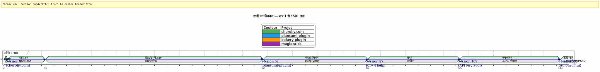
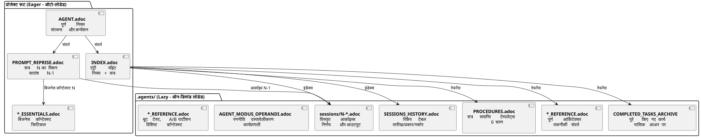
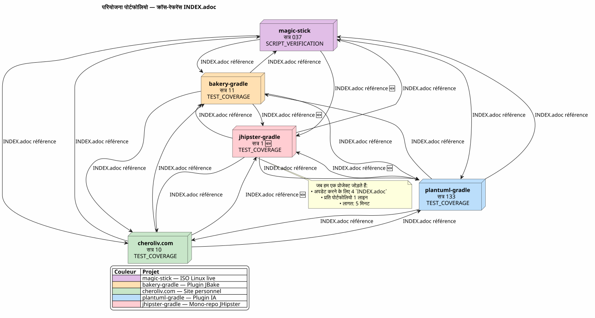
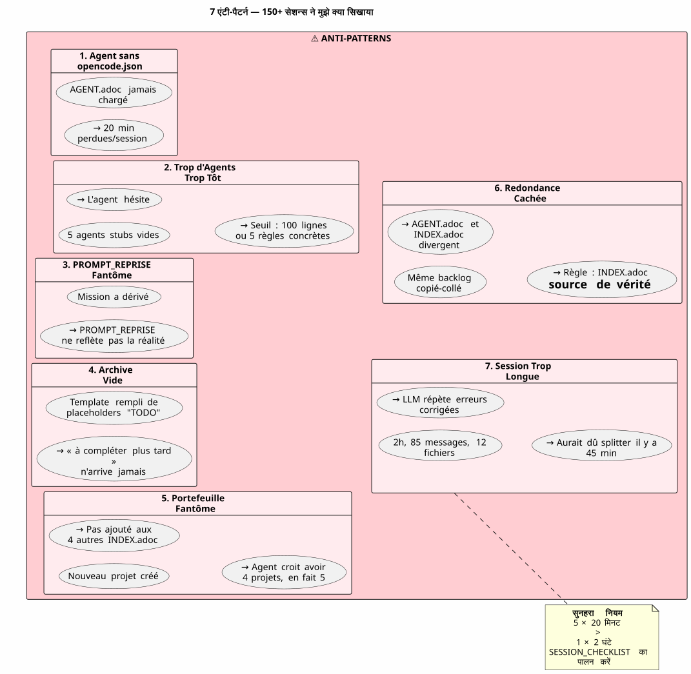

AsciiDoc के साथ एक AI एजेंट को नियंत्रित करना: कॉन्टेक्स्ट लीक-मुक्त Opencode सेशन्स के लिए मेरी Eager/Lazy रणनीति
प्रकाशित: 24 April 2026
संक्षेप
जब आप एक AI एजेंट जैसे Opencode के साथ जटिल परियोजनाओं पर कई सत्रों में काम करते हैं, तो आपको एक मूल समस्या का सामना करना पड़ता है :संदर्भ लीक. एजेंट पिछले सत्र को याद नहीं रखता। जो कुछ उसे समझाया गया — आर्किटेक्चर, परंपराएँ, बैकलॉग की स्थिति — खो गया है। इस संदर्भ को हर सत्र में फिर से बनाना महंगा, धीमा और त्रुटियों का स्रोत है।
इस लेख में मैं इस समस्या को हल करने के लिए बनाई गई हस्तनिर्मित रणनीति प्रस्तुत करता हूँ: AsciiDoc फ़ाइलों पर आधारित एक निरंतर शासन प्रणाली, एक द्वैत के साथ।उत्सुक/आलसीअनुकूलित करने के लिए संदर्भ टोकन का उपभोग, और एकअनिवार्य सत्र समाप्ति प्रक्रियानिरंतरता सुनिश्चित करने के लिए.
दृश्य : सोमवार 21 अप्रैल, 9:00
मैं Opencode को फिर से खोलता हूँ अपना Gradle प्लगइन जारी रखने के लिए`plantuml-plugin`. पिछली शाम, मैंने तीन घंटे API कुंजी पूल के आर्किटेक्चर एजेंट के साथ चर्चा की — राउंड-रॉबिन घूर्णन, कोटा प्रबंधन, स्वचालित फॉलबैक। इस सुबह, एजेंट मुझे लाल मछली की आंखों की तरह देख रहा है।
(No text to translate, so nothing output) नमस्ते, मैं आपका Opencode असिस्टेंट हूँ। आज मैं आपकी कैसे मदद कर सकता हूँ? __
नहीं — अरे हाँ, एपीआई कुंजी पूल, हम YAML संरचना पर थे। नहीं — सावधान,PlantumlManager`यह एक Kotlin सिंगलटन ऑब्जेक्ट है, एक क्लास नहीं। नहीं — नहीं, हमने कल निर्णय लिया कि`SyntaxValidationResult`यह एक sealed class nested में रहा था`PlantumlService.
सभी चीज़ों को फिर से करना है। या 오히려: सभी चीज़ों को फिर से समझाना है। मैं अपनी सत्र के पहले बीस मिनट उस संदर्भ को फिर से बनाने में व्यतीत करूंगा जो एजेंट ने कल अपने हाथों में पहले से ही रखे हुए था। बीस मिनट टोकन जलाए गए। बीस मिनट जब मैं कोड कर सकता था, लेकिन मैं अनिवार्य शैक्षिक कार्य कर रहा हूँ।
यह ओपencode का बग नहीं है। यह बातचीत करने वाले LLM की ही प्रकृति है : दो सत्रों के बीच, कार्यात्मक स्मृति हैपूरी तरह से मिटा दी गई. एजेंट पिछले मिशन को याद नहीं रखता, लिए गए निर्णय, पहचाने गए जालों, साथ में लिखा गया कोड को नहीं याद रखता।
मैंने इसे दसियों बार अनुभव किया। चार समानांतर प्रोजेक्ट्स पर। सप्ताहों तक चलने वाले सत्रों के साथ। मैंने गणना की : औसत में,सत्र के समय का 30 से 40 %इस बात को एजेंट को पुनः संदर्भित करने के लिए समर्पित किया गया था। परियोजना के सत्र 87 में`plantuml-plugin`, मैं टूट गया। मैं अब दसवीं बार वही बात समझाने का जोखिम नहीं उठा सकता था`AttemptEntry`एक टॉप-लेवल डेटा क्लास में`DiagramProcessor.kt`.
मुझे एक प्रणाली की आवश्यकता थी. एक हैक नहीं. एक वास्तविक शासन।
जेनेसिस: अफ़रातफ़री से पद्धति तक
पहले सत्र : अंधकार का युग
मेरा पहला प्रोजेक्ट Opencode के साथ,plantuml-plugin, इसने कोई भी प्रशासन के बिना शुरू किया। मैं एक प्रश्न पूछता हूँ, एजेंट जवाब देता है, हम पुनरावृत्ति करते हैं, सत्र समाप्त होता है, और अगले दिन हम शून्य से शुरू होते हैं। यह सत्र 1 था, फिर 2, फिर 3… सत्र 62 तक, जहाँ मैंने एहसास हुआ कि मैं एक ही आर्किटेक्चर को बार-बार समझाते हुए संचयी घंटे खो दिया।
सत्र 62 में, आंकड़े वहां हैं :198 यूनिट टेस्ट पास होते हैं, 42 सत्यापित कार्यात्मक परीक्षण, प्लगइन काम करता है. लेकिन संज्ञानात्मक लागत असहनीय है. हर नया सत्र प्रोजेक्ट की संरचना पर बीस मिनट के मोनोलॉग से शुरू होता है।
site.yml का एपिसोड नष्ट (सेशन 2, bakery-plugin)
इस विधि की भी एक आपदा से उत्पत्ति हुई है। परियोजना पर`bakery-gradle`, सत्र 2 में, मैं एजेंट से फ़ाइल को संशोधित करने का अनुरोध करता हूँ`site.yml`. एजेंट, बिना जाँच किए कि फ़ाइल संस्करणित है या नहीं, एक`Write`पूरी तरह सामग्री को मिटा देता है। परिणाम : वास्तविक टोकन (फ़ायरबेस API कुंजियाँ, डिप्लॉयमेंट सीक्रेट्स) को झूठे प्लेसहोल्डर्स से बदल दिया जाता है। फ़ाइल git में नहीं थी — वह वहां थी`.gitignore`रहस्यों की रक्षा करने के लिए
बैकअप के बिना. बिना`git restore`संभव. मैं फँस गया हूँ. मुझे कॉन्फ़िगरेशन फ़ाइल को हाथ से फिर से बनाना होगा, अपने पासवर्ड प्रबंधकों में टोकन खोजने होंगे, सब कुछ फिर से चिपकाना होगा।
इस निराशा से यह उत्पन्न होता हैनियम अBSOLUTE 1b:
_ कभी दबाना मतएक कॉन्फ़िगरेशन फ़ाइल के साथ एक`Write`पूरा जब एक`Edit`आंशिक पर्याप्त है।कभी बदलें नहींसंवेदनशील मानों को काल्पनिक मानों सेजाँचें git check-ignore और `git ls-filesकिसी भी संशोधन से पहले _
यह नियम आज मेरे सभी फाइलों के मार्बल में खुदा गया है`AGENT.adoc` et `INDEX.adoc`चार परियोजनाओं पर, एक वास्तविक त्रुटि से उत्पन्न हुई, जिसने मुझे एक घंटे का मैनुअल कार्य खर्च कर दिया।
मार्कडाउन से एस्कीडॉक माइग्रेशन (सत्र 1, cheroliv.com)
25 अप्रैल 2026, पर`cheroliv.com`, मैं एक कट्टर निर्णय लेता हूँ: मार्कडाउन की पूरी शासन को AsciiDoc में बदलना। यह सौंदर्यशास्त्र नहीं है, यह कार्यात्मक है। AsciiDoc एक ऐसी सार्थक संरचना प्रदान करता है जो LLM को बेहतर पढ़ने में मदद करता है: हिरार्चिकल सेक्शन, टाइप्ड टेबल, एडमोनिशन (NOTE, WARNING, CAUTION), मशीन-पठनीय दस्तावेज़ विशेषताएँ.
सत्र 1 का`cheroliv.com`संरचना का औपचारिकरण :
-
रूपांतरण का`AGENTS.md` en
AGENT.adoc -
विशेष एजेंटों की रचना :`CODER.adoc`,
SCRUM_MASTER.adoc,PLANTUML_DESIGNER.adoc -
Eager/Lazy संरचना का निर्माण :`INDEX.adoc`,
SESSIONS_HISTORY.adoc,AGENT_SESSION_MANAGER.adoc,SESSION_CHECKLIST.adoc,PROCEDURES.adoc
एक ही कमिट :`90975e9 refactor: migrate agent governance from Markdown to AsciiDoc`. और साइट चलती रहती है।

ऊपर दिया गया टाइमलाइन वास्तविक प्रगति को दर्शाता है। टर्निंग पॉइंट सत्र 87 है — वहाँ बार‑बार पुन:संदर्भीकरण की निराशा सहनशीलता की सीमा को पार कर देती है, और Eager/Lazy विधि केवल एक विचार नहीं रह जाती, बल्कि एक आवश्यकता बन जाती है।
रणनीति: ईगर/लेज़ी गहराई में
दर्शनशास्त्र: संज्ञान में लागू कंप्यूटर कैश
मेरा दृष्टिकोण सीधे कंप्यूटर कैश प्रबंधन से प्रेरित है। जो भी हैआलोचनात्मक और अक्सर उपयोग कियाइसे तुरंत पहुँचा जा सकता हैउत्सुक) सब कुछ जो हैसंदर्भ-आधारित या भारीअनुरोध पर लोड किया जाना चाहिएआलसी).
Eager (डैशबोर्ड) |
Lazy (स्वामी के लिए मैनुअल) |
आकार |
< 100 पंक्तियाँ, < 10k टोकन |
असीमित, विस्तृत |
लोड हो रहा |
Auto, सत्र की शुरुआत में |
एजेंट के अनुरोध पर |
सामग्री |
सख्त नियम, चालू मिशन, गंभीर स्थिति |
सत्र अभिलेख, पूर्ण इतिहास, विस्तृत प्रक्रियाएँ, तकनीकी संदर्भ |
भूमिका |
तुरंत एजेंट को उन्मुख करें |
गहरे संदर्भ के प्रश्नों का उत्तर दें |
Eager फ़ाइलें: डैशबोर्ड
ये फ़ाइलें प्रत्येक प्रोजेक्ट के मूल में रहती हैं और प्रत्येक सत्र की शुरुआत में एजेंट द्वारा स्वचालित रूप से लोड की जाती हैं। वे बनाते हैंडैशबोर्ड-- महत्वपूर्ण जानकारी, तुरंत उपलब्ध.

AGENT.adoc-- फ़ाइल मास्टर। पर`cheroliv.com`, इसमें 200 पंक्तियाँ हैं और यह समावेश है :
-
प्रोजेक्ट के कठोर नियम (कोई कमिट अनुमति के बिना नहीं, कोई`rm`बिना पुष्टि के)
-
परियोजना की संरचना और कोड की सम्मतियाँ
-
आवश्यक आदेश (
./gradlew serve,./gradlew test) -
एपिक्स और प्रोडक्ट बैकलॉग (प्राथमिकता प्राप्त उपयोगकर्ता कहानियाँ)
-
अनुदिश गुणवत्ता मानदंड (सुलभता, प्रतिक्रिया-योग्यता, संगतता)
पर`bakery-plugin`, नियम 0 अलग है :./gradlew -q publishToMavenLocal` स्रोत कोड के प्रत्येक संशोधन के बाद अनिवार्य. प्लगइन को स्थानीय JAR को पुन: प्रकाशित किए बिना टेस्ट करने से, जो अभी तक पैकेज नहीं किया गया था, एक बग को ठीक करने के लिए एक घंटे की बर्बादी हुई।
PROMPT_REPRISE.adoc-- वर्तमान सत्र का मिशन। प्रत्येक सत्र के अंत में अद्यतन किया जाता है, यह निम्नलिखित शामिल है:
-
सत्र संख्या और प्राथमिकता मिशन
-
पिछले सत्र का सारांश (क्या किया गया, क्या अभी बाकी है)
-
वर्तमान सत्र के स्वीकृति मानदंड
-
विशेष तकनीकी याद दिलाने
.agents/INDEX.adoc-- प्रवेश बिंदु। यह पूर्ण नियम, हाल के सत्रों और विशेष रूप से संक्षेपित करता है।प्रोजेक्ट पोर्टफ़ोलियोउन्हें उसी पद्धति के साथ प्रबंधित किया जाता है। अब तक, इस पर पाँच परियोजनाएँ सूचीबद्ध हैं :
----
----
----
----
| magic-stick | Session 23 | SCRIPT_VERIFICATION.adoc | 2026-04-27 |
| bakery-gradle | Session 11 | TEST_COVERAGE_ANALYSIS | 2026-04-27 |
| cheroliv.com | Session 9 | TEST_COVERAGE_ANALYSIS | 2026-04-27 |
| plantuml-gradle| Session 133| TEST_COVERAGE_ANALYSIS | 2026-04-23 |
| jhipster-gradle-plugins | Session 1 | TEST_COVERAGE_ANALYSIS | 2026-04-28 |
----
आप एक पेशेवर अनुवादक हैं। fr से hi तक अनुवाद करें। सभी बैकटिक कोड स्पैन (`...`) को बिल्कुल वैसा ही संरक्षित रखें — बैकटिक सामग्री, स्पेसिंग, या स्थिति को कभी संशोधित न करें। यह पाठ एक वाक्य का अंश हो सकता है — अधिक संदर्भ मांगे बिना अंश का अनुवाद करें। केवल अनुवादित पाठ आउटपुट करें — कोई व्याख्या, टिप्पणी, परिचय, विकल्प या विकल्प नहीं।`*_ESSENTIALS.adoc`-- एक हालिया अतिरिक्त (सत्र 109, plantuml-plugin) ईगर संदर्भ को और अनुकूलित करने के लिए। API कुंजी पूल पर 200 व्यावसायिक संदर्भ पंक्तियों को लोड करने के बजाय, मैं 50 आवश्यक पंक्तियाँ लोड करता हूँ, और शेष 150 पंक्तियाँ LAZY में रहती हैं।`*_REFERENCE.adoc`.
मापा गया परिणाम : पारगमन**~25k टोकन EAGER से ~10k टोकन**(60% का लाभ). एजेंट को अब ऊर्जा-उपभोग करने वाले अनुस्मारक की आवश्यकता नहीं है।
==== गायब कड़ी : `opencode.json
मुझे आपको एक बात बतानी है जिसे मैं दस्तावेज़ करने से लगभग भूल गया। इन सभी .adoc फ़ाइलों के ऊपर, एक बहुत छोटा JSON फ़ाइल है, बिना जिसका कुछ भी काम नहीं होता। इसका नाम`opencode.json`और यह छह पंक्तियाँ बनाता है। शाब्दिक रूप से छह पंक्तियाँ।
[source,json]
----
{
"$schema": "https://opencode.ai/config.json",
"instructions": [
"AGENT.adoc"
]
}
----
यह फ़ाइल Opencode को बताती है: « स्टार्टअप पर, लोड `AGENT.adoc`स्वचालित रूप से। बिना उसके, एजेंट एक खाली पन्ना है जैसा कि मैं लेख की शुरुआत में वर्णन कर रहा था। उसके साथ, एजेंट के पास पहले से ही निरपेक्ष नियम, परियोजना की वास्तुकला, और आवश्यक कमांडें हैं — भले ही मैं नमस्ते कहने से पहले।
मैंने इस फ़ाइल के महत्व को किसी भी तरह से पता लगाया। पर`bakery-plugin`, यह नहीं था। मैं सोच रहा था कि एजेंट क्यों इस प्रोजेक्ट पर अन्य की तुलना में व्यवस्थित रूप से अधिक « खोया हुआ » था। असाधारण नियम अच्छी तरह से भीतर`AGENT.adoc`— लेकिन`AGENT.adoc`यह कभी चार्ज नहीं था। एजेंट केवल वही पढ़ता था जो मैं उसे पढ़ने के लिए कहता था, मैन्युअल रूप से, प्रत्येक सत्र में। यह सत्र 11 का था`bakery-plugin`जब मैंने इसका अभाव महसूस किया`opencode.json`. मैंने इसे बनाया — और सत्र 12 ने अन्य सभी की तरह शुरू हो गया।
यह फ़ाइल अब मेरे लिए इतनी स्पष्ट हो गई है कि मैं उसे सोचना भी भूल गया। एक क्लासिक डेवलपर की गलती जो अपने टूल को बहुत अच्छी तरह से जानता है। आज, मैं इसे प्रणालीगत रूप से *पहले* बनाता हूं।`AGENT.adoc`. यह पहला पत्थर है।
==== INDEX.adoc` की द्वैतता
एक और सूक्ष्मता जो स्पष्ट करने लायक है:`INDEX.adoc`रहता है`.agents/`— एक फ़ाइल जिसे मैंने LAZY के रूप में प्रस्तुत किया है। हालांकि, मैं इसे अपने सभी तालिकाओं में EAGER के रूप में सूचीबद्ध करता हूँ। यहाँ एक स्पष्ट तनाव है।
क्षेत्र की वास्तविकता: फ़ाइलें`.agents/INDEX.adoc`वे सत्र की शुरुआत में स्वचालित रूप से अच्छी तरह से लोड किए जाते हैं, ठीक उसी तरह जैसे`AGENT.adoc` et `PROMPT_REPRISE.adoc`. वे में हैं`.agents/`संगठन के कारण — जड़ पर आक्रमण न करने के लिए — लेकिन उनका व्यवहार EAGER है।
पर`plantuml-plugin`, `INDEX.adoc`इसमें 200 लाइनें हैं और इसमें इतिहास के साथ (पिछले सत्रों के सबक) स absoluta *complètes* नियम, स्कोर वाले EPICs, और प्रोजेक्ट पोर्टफोलियो शामिल हैं। यह वह दस्तावेज़ है जिसे एजेंट यह जानने के लिए देखता है कि « हम कहाँ हैं ». Sur`bakery-plugin`, यह 150 लाइनें roadmap और हाल के सत्रों के साथ बनाता है।
स्वैच्छिक अतिरेक बीच`AGENT.adoc` et `INDEX.adoc`यह आश्चर्यजनक हो सकता है। निरपेक्ष नियम दोनों में मौजूद हैं। क्यों ? क्योंकि वे दो अलग-अलग भूमिकाएँ निभाते हैं : में`AGENT.adoc`, वे हैं *व्याख्यात्मक* (नियम की कहानी, सीखा गया पाठ) ; में`INDEX.adoc`, वे *कार्यपालक* हैं (नग्न नियम, बिना कारण के, त्वरित परामर्श के लिए). एजेंट पढ़ता है`AGENT.adoc`एक बार *समझने* के लिए ; वह फिर से पढ़ता है`INDEX.adoc`हर सत्र में *लागू करने के लिए*। दो उपयोग, दो प्रारूप।
[plantuml, format=svg, id=diag-dualite-agent-index, alt="Comparaison entre AGENT.adoc (narratif) et INDEX.adoc (exécutif)"]
----
@startuml
skinparam backgroundColor #FEFEFE
skinparam defaultTextAlignment center
title द्वैत AGENT.adoc ←→ INDEX.adoc
left to right direction
rectangle "AGENT.adoc\n(मूल — EAGER)" as AGENT #E3F2FD {
rectangle "📖 **कहानी प्रारूप**\nनियम की कहानी\nसीखा गया पाठ, संदर्भ" as NARR
rectangle "🏗️ **पूर्ण वास्तुकला**\nपरियोजना संरचना, घटक\nविस्तृत बैकलॉग US" as ARCHI
rectangle "📋 **व्याख्यात्मक नियम**\nनियम क्यों मौजूद है\nघटना का इतिहास" as EXPL
}
rectangle "INDEX.adoc\n(.agents/ — EAGER)" as INDEX #E8F5E9 {
rectangle "⚡ **कार्यकारी प्रारूप**\nनग्न नियम, बिना औचित्य के\nत्वरित परामर्श" as EXEC
rectangle "📊 **Roadmap & EPICs**\nसारांश तालिका\nप्रगति, स्कोर, प्राथमिकता" as ROAD
rectangle "🌐 **परियोजना पोर्टफोलियो**\nसंपूर्ण दृश्य\n5 सिंक्रोनाइज़्ड परियोजनाएं" as PORT
}
AGENT --> INDEX : "एजेंट AGENT.adoc पढ़ता है\n1 बार **समझने** के लिए"
INDEX --> AGENT : "एजेंट ने INDEX.adoc फिर से पढ़ा\nप्रत्येक सत्र में **लागू** करने के लिए"
note bottom of AGENT
Taille max : 200 lignes
end note
note bottom of INDEX
Taille max : 200 lignes
Source de vérité en cas de divergence
end note
@enduml
----
यह मान्यता प्राप्त अतिरेक एक डिज़ाइन विकल्प है। यह लगभग 50 अतिरिक्त पंक्तियों के EAGER टोकन का उपभोग करती है — लेकिन यह सुनिश्चित करती है कि एजेंट के पास हमेशा नियम सामने होते हैं, संक्षिप्त प्रारूप में भी जो तत्काल अनुपालन को सुगम बनाता है।
=== लैज़ी फ़ाइलें: मालिक का मैनुअल
ये फ़ाइलें ... में रहती हैं`.agents/`और उन्हें केवल तभी पढ़ा जाता है जब एजेंट को उनकी आवश्यकता होती है। वे विधि की वास्तविक संपदा हैं, क्योंकि वे परियोजना के ज्ञान को संचय करते हैं वर्तमान संदर्भ को प्रदूषित किए बिना।
[plantuml, format=svg, id=diag-agents-tree, alt="Arborescence complète du dossier .agents/"]
----
@startuml
skinparam folderBackgroundColor #E3F2FD
skinparam folderBorderColor #1565C0
skinparam fileBackgroundColor #FFF3E0
skinparam fileBorderColor #EF6C00
folder ".agents/" as ROOT {
file "INDEX.adoc\n(EAGER -- 200 पंक्तियाँ)" as IDX #E8F5E9
file "AGENT_SESSION_MANAGER.adoc\n(टेम्पलेट सत्र)" as ASM
file "SESSION_CHECKLIST.adoc\n(बदलने का समय)" as CHK
file "PROCEDURES.adoc\n(6 चरण + LAZY/EAGER)" as PRO
file "SESSIONS_HISTORY.adoc\n(सभी सत्र)" as HIS
folder "सत्रों/" as SESS {
file "1-chore-migration.adoc" as S1
file "109-औपचारिकी-आलसी.adoc" as S109 #FFECB3
file "133-epic11-article.adoc" as S133
file "... +130 अन्य" as SMORE
}
folder "अभिलेखागार/" as ARCH {
file "COMPLETED_TASKS_2026-04.adoc" as CTA
file "SESSIONS_HISTORY_83-95.adoc" as SHIST
folder "sessions_summaries/" as SUM {
file "SESSION_64_SUMMARY.adoc" as SU64
file "SESSION_73_SUMMARY.adoc" as SU73
file "..." as SUMORE
}
folder "prompts_archive/" as PARCH {
file "PROMPT_REPRISE_S65.adoc" as PR65
file "PROMPT_REPRISE_S75.adoc" as PR75
file "..." as PMORE
}
}
}
IDX --> SESS : "वह अनुक्रमित करता है"
IDX --> HIS : "वह अनुक्रमित करता है"
IDX --> ARCH : "संदर्भ"
note right of S109
Session 109 =
Formalisation stratégie
LAZY/EAGER
Token : ~25k → ~10k
end note
@enduml
----
ऊपर दिखाए गए ट्री संरचना फ़ोल्डर की वास्तविक संरचना दर्शाता है`.agents/`पर`plantuml-plugin`, सबसे परिपक्व परियोजना. तीन स्तरों में गहराई नोट करें: रूट फ़ाइलें (मेटाडेटा), फ़ोल्डर`sessions/`(कालक्रम संग्रह), और फ़ाइल`archives/`(संकलन और सारांश). यह गहराई एक साधारण TODO फ़ाइल के शासन को बदल देती है एक**पूर्ण संगठनात्मक स्मृति**.
**.agents/sessions/{N}-{titre}.adoc**-- प्रत्येक सत्र के विस्तृत अभिलेख। वर्तमान में :
* `plantuml-plugin`:**133 संग्रहीत सत्र**(सत्र 1 से 133 तक)
* `bakery-plugin`:**11 सत्र**
* `magic-stick` : **23 सत्र**
* `cheroliv.com`:**9 औपचारिक सत्र**+ 7 पूर्व-प्रणाली सत्रों को पीछे से पुनर्स्थापित किया गया
हर आर्काइव में सत्र का पूर्ण संदर्भ, लिए गए निर्णय, सामना की गई समस्याएँ और उनका समाधान, निष्पादित की गई कमांड और उनका आउटपुट शामिल होता है।
**.agents/SESSIONS_HISTORY.adoc**-- सभी सत्रों के स्कोरों की सारांश तालिका। उदाहरण पर`cheroliv.com`:
----
| -6 | 2025-05 | chore | Initialisation projet Gradle/JBake | 7/10 | 1 | 2026-04-25 | chore | Migration gouvernance agent | 8/10 | 7 | 2026-04-27 | debug/fix | Correction publishSite | 9/10 | 8 | 2026-04-27 | analyse | Analyse article 0108 | 7/10
**.agents/COMPLETED_TASKS_ARCHIVE_{mois}.adoc**-- अभियोजित कार्यों को मासिक रूप से संग्रहीत किया जाता है, ताकि सक्रिय बैकलॉग को अधिक भार न दिया जाए। जब कोई उपयोगकर्ता कहानी पूरी हो जाती है, तो वह यहाँ आ जाती है। बैकलोग पढ़ने योग्य रहता है : अधिकतम 10 सक्रिय आइटम।
**.agents/PROCEDURES.adoc**-- सत्र समाप्ति प्रक्रिया के विस्तृत टेम्पलेट। लंबा, लेकिन एजेंट द्वारा केवल एक बार पढ़ा जाता है जब वह विधि सीखता है। फिर प्रक्रिया यांत्रिक हो जाती है।
**.agents/AGENT_MODUS_OPERANDI.adoc**-- पूर्ण रणनीतिक दस्तावेज़. पर`plantuml-plugin`, यह फ़ाइल करता है**900+ लाइनें**और इसका वास्तव में नाम`AGENT_METHODOLOGIES.adoc`— मैंने इस लेख के लिखने और उसके वास्तविक कार्यान्वयन के बीच नाम बदल दिया। इस तरह की नाम भिन्नता एक विकसित हो रहे शिल्पी प्रणाली में अनिवार्य है। महत्वपूर्ण बात नामावली की परंपरा है: यदि फ़ाइल *विधि* को दस्तावेज़ करती है, तो यह शुरू होती है`AGENT_`या एक स्पष्ट प्रीफ़िक्स। यह Eager/Lazy पद्धति का दस्तावेज़ीकरण करता है, पालन करने वाले पैटर्न, और बचने वाले एंटी‑पैटर्न। यह LAZY है क्योंकि एक एजेंट को हर सत्र में पूरी रणनीति को फिर से पढ़ने की आवश्यकता नहीं होती, केवल जब अस्पष्टता हो।
**`*_REFERENCE.adoc`** -- प्रोजेक्ट-विशिष्ट तकनीकी संदर्भ। पर`magic-stick`, दो घनी LAZY फ़ाइलें:
* `AB_PARTITION_REFERENCE.adoc`(147 पंक्तियाँ) -- पार्टीशन आर्किटेक्चर A/B GPT, स्क्रिप्ट्स`update-system.sh`, अनुमानित आकार, रॉलबैक तंत्र
* `BOOT_TEST_REFERENCE.adoc`(144 पंक्तियाँ) -- प्रक्रिया QEMU + VNC ISO के बूट का परीक्षण करने के लिए भौतिक हार्डवेयर के बिना, BIOS/UEFI चेकलिस्ट, CI/CD सीमाएँ
पर`plantuml-plugin`</think>
* `ARCHITECTURE.adoc`(134 लाइन) -- 11 डेटा क्लासेस की संरचना, ध्यान देने वाले बिंदु (से बचने वाले जाल), अनुकूलित परीक्षण कमांड
* `API_KEY_POOL_REFERENCE.adoc`-- कुंजी पूल के पूर्ण विवरण (LAZY जब तक`ESSENTIALS`है EAGER)
== विशेषज्ञ एजेंट : एक आभासी टीम
गवर्नेंस निष्क्रिय फ़ाइलों तक सीमित नहीं है। मैंने कुछ को औपचारिक रूप दिया**विशेषीकृत एजेंट्स की भूमिकाएँ**समर्पित LAZY फ़ाइलों में, जो कार्य के प्रकार के अनुसार अपेक्षित कार्यप्रवाह को परिभाषित करते हैं।
|===
|एजेंट |फ़ाइल |भूमिका |परियोजना |**कोडर** |`CODER.adoc` |FTL/CSS/JS के कार्यान्वयन, अर्थपूर्ण टैग, पहुँच मानदंड |cheroliv.com |**स्क्रम मास्टर** |`SCRUM_MASTER.adoc` |अमेरिकी योजना, उप-कार्यों में विभाजन, निर्भरताओं का पता लगाना |cheroliv.com |**PlantUML डिज़ाइनर** |`PLANTUML_DESIGNER.adoc` |डायग्राम बनाने, PUML सिंटैक्स, JBake एकीकरण |cheroliv.com
|===
फ़ाइल`CODER.adoc`पर`cheroliv.com`इसमें ठोस नियम हैं : _ एक ही`<h1>`per page_, _प्रीफ़िक्स पथों साथ`${content.rootpath}`_, _भाषा की घोषणा करना`<html lang="${content.lang!"fr"}">`_. ये परिपाटियाँ, एक बार लिखी गईं, एजेंट द्वारा सत्र 1 से स्वचालित रूप से पालन की जाती हैं।
फ़ाइल`SCRUM_MASTER.adoc`एक डिलिवरेबल संरचना लागू करता है :**लक्ष्य**, **कार्य**(निर्देशांक असाइनमेंट के साथ),**स्वीकृति मानदंड**, **जोखिम**जब मैं एक कार्य योजना मांगता हूँ, तो एजेंट बिना मेरे अनुरोध के इस संरचना को तैयार कर देता है। शासन**कार्यक्रम**एजेंट.
==== जब विशेषीकृत एजेंट्स अनिवार्य हो जाते हैं
विशेषीकृत एजेंटों की रचना एक प्राकृतिक वक्र का पालन करती है। एक परियोजना के शुरुआत में, आपको इसकी आवश्यकता नहीं है —`AGENT.adoc`यह पर्याप्त है। लेकिन जब परियोजना बढ़ती है (मान लीजिए, 20 सत्रों से अधिक), तो दो संकेत आपको सतर्क करने चाहिए :
1. एजेंट दो अलग-अलग क्षेत्रों की परंपराओं को मिलाता है (उदाहरण: PlantUML सिंटैक्स और CSS नियम)
2. आप एजेंट को उन परंपराओं पर ठीक करने में अधिक समय बिताते हैं जिन्हें आपने उसे पहले ही 5 बार समझा दिया है
पर`cheroliv.com`, यह सत्र में आया... 1. हाँ, शुरुआत से। क्योंकि यह प्रोजेक्ट तीन भाषाओं (FTL, CSS, JS) वाली एक वेबसाइट है, AsciiDoc सामग्री और PlantUML डायग्राम — तीन ऐसे क्षेत्र जो बिल्कुल अलग हैं। CODER एजेंट को फ़ॉन्ट के आकार और मीडिया क्वेरीज़ जानने की आवश्यकता है; PLANTUML_DESIGNER एजेंट को सिंटैक्स जानने की आवश्यकता है है। is required? Actually we repeated "है" twice. Let's correct: The last part: "PLANTUML_DESIGNER एजेंट को सिंटैक्स जानने की आवश्यकता है" only one "है". I mistakenly added extra. Let's rewrite final sentence correctly.
Full translation:
", यह सत्र में आया... 1. हाँ, शुरुआत से। क्योंकि यह प्रोजेक्ट तीन भाषाओं (FTL, CSS, JS) वाली एक वेबसाइट है, AsciiDoc सामग्री और PlantUML डायग्राम — तीन ऐसे क्षेत्र जो बिल्कुल अलग हैं। CODER एजेंट को फ़ॉन्ट के आकार और मीडिया क्वेरीज़ जानने की आवश्यकता है; PLANTUML_DESIGNER एजेंट को सिंटैक्स जानने की आवश्यकता है"
Check punctuation: after "है" we have comma? Original French: "... AsciiDoc, et des diagrammes PlantUML — trois domaines qui n'ont rien à voir." So after AsciiDoc there is comma, then space, then "et". We translated as "AsciiDoc सामग्री और PlantUML डायग्राम — ". We kept comma after AsciiDoc? Actually we placed a comma after "AsciiDoc सामग्री"? Let's see: we wrote "AsciiDoc सामग्री और PlantUML डायग्राम — ". There should be a comma before "और"? In French they had a comma before "et". In Hindi we can keep a comma before "और". Let's insert a comma: "AsciiDoc सामग्री, और PlantUML डायग्राम — ". But Hindi often uses "और" without comma. However to preserve punctuation we should keep a comma where French had one. French: ", du contenu AsciiDoc, et des diagrammes PlantUML". So there is a comma after AsciiDoc, then space, then "et". So we need a comma after AsciiDoc content before "और". So: "AsciiDoc सामग्री, और PlantUML डायग्राम — ". Good.
Now also after em dash we have space then "trois domaines". We kept space.
Now final string:
", यह सत्र में आया... 1. हाँ, शुरुआत से। क्योंकि यह प्रोजेक्ट तीन भाषाओं (FTL, CSS, JS) वाली एक वेबसाइट है, AsciiDoc सामग्री, और PlantUML डायग्राम — तीन ऐसे क्षेत्र जो बिल्कुल अलग हैं। CODER एजेंट को फ़ॉन्ट के आकार और मीडिया क्वेरीज़ जानने की आवश्यकता है; PLANTUML_DESIGNER एजेंट को सिंटैक्स जानने की आवश्यकता है"
Check trailing punctuation: French ended with no period after "la syntaxe". Actually French: "... a besoin de connaître la syntaxe" no period. So we should not add a period at end. We ended with "है". No period. Good.
Now output exactly that.
</think>
, यह सत्र में आया... 1. हाँ, शुरुआत से। क्योंकि यह प्रोजेक्ट तीन भाषाओं (FTL, CSS, JS) वाली एक वेबसाइट है, AsciiDoc सामग्री, और PlantUML डायग्राम — तीन ऐसे क्षेत्र जो बिल्कुल अलग हैं। CODER एजेंट को फ़ॉन्ट के आकार और मीडिया क्वेरीज़ जानने की आवश्यकता है; PLANTUML_DESIGNER एजेंट को सिंटैक्स जानने की आवश्यकता है`@startuml`. बिना अलगाव के, एजेंट CODER ने मुझे डायग्राम पेश किए, और उल्टा भी. अफ़रा-तफ़री.
पर`jhipster-gradle-plugins`, मैंने दो विशेष एजेंट बनाए हैं जो Gradle प्लगइन के विकास के लिए अनुकूलित हैं :`PLUGIN_DEVELOPER.adoc` et `BACKLOG_MANAGER.adoc`. पहला सभी Kotlin/Gradle सम्मेलनों को कोड करता है (नहीं`!!`, मॉडल के लिए डेटा क्लासेस,`@TaskAction`कार्यों के लिए). दूसरा जानता है कि`persistence`इससे पहले स्थिर होना चाहिए`assistant`इसका विकास शुरू नहीं होता — एक मोनो-रेपो में एक महत्वपूर्ण निर्भरता।
गलती जो नहीं करनी चाहिए: बहुत सारे एजेंट बहुत जल्दी बनाना।`plantuml-plugin`उसने सत्र 108 का इंतजार किया API कुंजी पूल के लिए एक विशेष एजेंट को स्थापित करने से पहले। इससे पहले, व्यावसायिक संदर्भ इसमें निहित था`AGENT.adoc`. अनुभवजनित नियम: एक विशेषज्ञ एजेंट उचित ठहराया जाता है जब इसका व्यावसायिक क्षेत्र 100 लाइनों के दस्तावेज़ से अधिक हो।
==== सत्र नामकरण परम्परा
वह विवरण जो बेकार प्रतीत होता है, लेकिन जब आप 100 सत्रों तक पहुँचते हैं तो यह महत्वपूर्ण बन जाता है। आर्काइव फ़ाइलों का नाम कैसे रखें?
मुझे कठोर अनुभव से पता चला कि एक नियम आवश्यक है — चार परियोजनाएँ, चार अलग‑अलग प्रारूप प्रारम्भ में, और मैं उलझ गया था। आज, वह नियम जिसे मैंने स्थिर कर दिया है, वह है:
----
{N}-{type}-{sujet-kebab-case}.adoc
वास्तविक उदाहरण :
* `1-chore-migration-gouvernance-agent.adoc`— सत्र 1, प्रकार काम
* `10-solidification-tests.adoc`— सत्र 10, स्पष्ट प्रकार नहीं (विषय पर्याप्त है)
* `036-debug-graphify-symlink-epic9.adoc`— सत्र 36 में 3 अंकों की संख्या क्रमबद्ध करने के लिए
सत्र संख्या मुख्य क्रम मानदंड है। तीन अंकों वाली संख्याओं (001, 036, 133) का उपयोग करने वाले प्रोजेक्ट्स 99 से अधिक होने पर लेक्सिकोग्राफ़िकल सॉर्टिंग समस्याओं से बचते हैं। यह वही है जो मैं अब उपयोग करता हूँ पर`magic-stick`:`001-init-projet.adoc`, `036-debug-graphify-symlink-epic9.adoc`.
टाइप वैकल्पिक है और सत्र की कीवर्ड से प्राप्त होता है (debug, feature, refactor, docs, chore, test)। kebab-case में विषय सबसे महत्वपूर्ण भाग है : यह एक सत्र को फ़ाइल खोले बिना खोजने में सक्षम होना चाहिए। यदि आप पूछ रहे हैं « यह किस सत्र था जहां हमने इंटीग्रेशन टेस्ट्स का टाइमआउट ठीक किया था? », तो उत्तर है`124-fix-timeout-integration-test.adoc`.
पुनःनिर्मित ऐतिहासिक सत्रों के लिए (शासन से पहले जन्मी परियोजनाओं के लिए), मैं नकारात्मक संख्याओं का उपयोग करता हूँ। पर`cheroliv.com`, सत्रों -6 से 0 तक पूरे प्रोजेक्ट के प्री-गवर्नेंस इतिहास को कवर करती हैं। और सत्रों «अदस्तावेजीकृत» या खोई हुई के लिए, मैं एक प्रविष्टि बनाता हूँ में`SESSIONS_HISTORY.adoc`कोई संगत अभिलेख नहीं, एक स्कोर के साथ`?`यह नाटक करने से ज्यादा ईमानदार है।
[plantuml, format=svg, id=diag-naming-convention, alt="Arbre de décision pour le nommage des fichiers de session"]
----
@startuml
skinparam backgroundColor #FEFEFE
skinparam defaultTextAlignment center
skinparam wrapWidth 200
title सत्रों के नामकरण की संधि
start
:Une session se termine;
note right: Trigger "सत्र की समाप्ति"
if (Session antérieure\nà la gouvernance ?) then (oui)
:Numéro **NÉGATIF**\n-6, -5 ... 0;
note right: Historique\nreconstitué
:Suffixe : reconstitution;
else (non)
:Numéro **POSITIF**\nsur 3 chiffres si > 99;
note right: 001, 036, 133\npour le tri lexicographique
:Détecter le **TYPE**;
if (Mots-clés trouvés ?) then (oui)
:debug / feature / refactor\ndocs / chore / test;
else (non)
:Omettre le type\n(le sujet suffit);
endif
:Formuler le **SUJET** en kebab-case;
note right
Ex: fix-timeout-integration-test
Doit permettre de retrouver
sans ouvrir le fichier
end note
endif
:Nom final : {N}-{type}-{sujet}.adoc;
note right
• 1-chore-migration-gouvernance.adoc
• 036-debug-graphify-symlink.adoc
• 124-fix-timeout-integration-test.adoc
• 133-epic11-article-blog-kg.adoc
end note
if (Session documentée ?) then (oui)
:Créer archive dans sessions/;
:Ajouter ligne SESSIONS_HISTORY\navec score X/10;
else (non)
:Ajouter ligne SESSIONS_HISTORY\navec score **?**\n**sans archive**;
note right: L'honnêteté\nplutôt que le vide
endif
stop
@enduml
----
==== TEST_COVERAGE_ANALYSIS.adoc` — चरण 5 विस्तृत
सत्र समाप्ति प्रक्रिया के चरण 5 सबसे रहस्यमय है। यह कहती है « अपडेट करें`TEST_COVERAGE_ANALYSIS.adoc`यदि परीक्षण जोड़े या संशोधित किए गए हैं। » लेकिन यह फ़ाइल कैसी दिखती है ?
पर`plantuml-plugin`, उसने कुछ लाइनों से एक पूर्ण संरचना में विकास किया। यह उसकी स्थिर रूप है :
[source]
----
= Analyse de Couverture de Tests
== Suivi des Tests
|===
| Classe de test | Type | Tests | Statut | Dernière MAJ
| PlantumlServiceTest | unit | 45/45 | ✅ PASS | 2026-04-23
| ApiKeyPoolTest | integration | 15/15 | ✅ PASS | 2026-04-20
|===
== Historique par Session
| Session | Tests ajoutés | Tests modifiés | Couverture
| 133 | 0 | 2 | 100%
| 132 | 5 | 0 | 100%
|===
----
रुचि फ़ाइल स्वयं में नहीं है — यह *नोट* करने की बाध्यता है कि क्या बदल गया है। इस चरण के बिना, 50 सत्रों के बाद, आप नहीं जान पाते कि कौन से टेस्ट क्या कवर करते हैं। एजेंट भी नहीं। फ़ाइल प्रोजेक्ट के टेस्ट कवरेज की सच्चाई का एकल भंडार बन जाती है।
पारंपरिक परीक्षणों के बिना प्रोजेक्ट्स के लिए (जैसे`magic-stick`जो बश स्क्रिप्ट का परीक्षण करता है), चरण 5 को प्रतिस्थापित किया गया है`SCRIPT_VERIFICATION.adoc`. तंत्र एक ही है : एक फ़ाइल जो स्क्रिप्ट के सत्यापन स्थिति का पालन करती है। अपनें प्रोजेक्ट के अनुसार चरण 5 को अनुकूलित करें, लेकिन कभी भी इसे छोड़ें नहीं। यह सुरक्षा जाल है जो चुपके से होने वाले प्रतिगमन को रोकता है।
[plantuml, format=svg, id=diag-dualite-agent-index, alt="Comparaison entre AGENT.adoc (narratif) et INDEX.adoc (exécutif)"]
----
@startuml
skinparam backgroundColor #FEFEFE
skinparam defaultTextAlignment center
title द्वैत AGENT.adoc ←→ INDEX.adoc
left to right direction
rectangle "AGENT.adoc\n(रूट — EAGER)" as AGENT #E3F2FD {
rectangle "📖 **कथात्मक प्रारूप**\nनियम का कथा-कथन\nसीखा गया सबक, संदर्भ" as NARR
rectangle "🏗️ **संपूर्ण आर्किटेक्चर**\nप्रोजेक्ट संरचना, घटक\nविस्तृत US बैकलॉग" as ARCHI
rectangle "📋 **व्याख्यात्मक नियम**\nनियम क्यों मौजूद है\nघटना का इतिहास" as EXPL
}
rectangle "INDEX.adoc\n(.agents/ — EAGER)" as INDEX #E8F5E9 {
rectangle "⚡ **कार्यकारी प्रारूप**\nसादा नियम, बिना किसी औचित्य के\nत्वरित परामर्श" as EXEC
rectangle "📊 **रोडमैप और EPICs**\nसारांश तालिका\nप्रगति, स्कोर, प्राथमिकता" as ROAD
rectangle "🌐 **प्रोजेक्ट पोर्टफ़ोलियो**\nअनुप्रस्थ दृश्य\n5 प्रोजेक्ट सिंक्रनाइज़्ड" as PORT
}
AGENT --> INDEX : "एजेंट AGENT.adoc को\n1 बार **समझने** के लिए पढ़ता है"
INDEX --> AGENT : "एजेंट INDEX.adoc\nहर सत्र में **लागू करने** के लिए फिर से पढ़ता है"
note bottom of AGENT
Taille max : 200 lignes
end note
note bottom of INDEX
Taille max : 200 lignes
Source de vérité en cas de divergence
end note
@enduml
----
[plantuml, format=svg, id=diag-session-flow, alt="Flux d'une session type avec Eager/Lazy et agents"]
----
@startuml
skinparam backgroundColor #FEFEFE
start
:Début session;
note right: L'agent est une page blanche
:Chargement EAGER auto;
note right
* AGENT.adoc (règles absolues)
* PROMPT_REPRISE.adoc (mission N)
* INDEX.adoc (état projet)
end note
if (Mission claire ?) then (oui)
:Exécution directe;
else (non)
:Charge LAZY sur demande;
note right
* SESSIONS_HISTORY.adoc (contexte passé)
* sessions/{N-1}-*.adoc (décisions)
* *_REFERENCE.adoc (architechture)
end note
endif
:Délégation agent spécialisé ?;
if (CODER ?) then (oui)
:Lit CODER.adoc;
:Suit conventions FTL/CSS;
elseif (SCRUM Master ?) then (oui)
:Lit SCRUM_MASTER.adoc;
:Structure livrable imposée;
elseif (PlantUML ?) then (oui)
:Lit PLANTUML_DESIGNER.adoc;
:Syntaxe PUML + intégration;
else (non)
endif
:Travail de la session;
:Fin de session (trigger utilisateur);
:Procédure 6 étapes;
note right
1. Archive sessions/N-*.adoc
2. Maj PROMPT_REPRISE.adoc (N+1)
3. Maj SESSIONS_HISTORY.adoc
4. Maj INDEX.adoc
5. Maj TEST_COVERAGE (si applicable)
6. Maj COMPLETED_TASKS_ARCHIVE.adoc
end note
:Checklist [✅] x 6;
stop
@enduml
----
ऊपर दिया गया आरेख एक सत्र के पूर्ण जीवन चक्र को दिखाता है। मुख्य बिंदु EAGER लोडिंग के बाद का विभाजन है: या तो मिशन स्पष्ट है और इसे सीधे निष्पादित किया जा सकता है (80% मामलों में), या तो एजेंट अस्पष्टता को हल करने के लिए LAZY लोड करता है (20% मामलों में)। यह ही भेद टोकन बचाता है।
== सत्र समाप्ति प्रक्रिया : सुनहरा नियम
[plantuml, format=svg, id=diag-agents-tree, alt="Arborescence complète du dossier .agents/"]
----
@startuml
skinparam folderBackgroundColor #E3F2FD
skinparam folderBorderColor #1565C0
skinparam fileBackgroundColor #FFF3E0
skinparam fileBorderColor #EF6C00
folder ".एजेंट्स/" as ROOT {
file "INDEX.adoc\n(EAGER -- 200 पंक्तियाँ)" as IDX #E8F5E9
file "AGENT_SESSION_MANAGER.adoc\n(टेम्पलेट सत्र)" as ASM
file "SESSION_CHECKLIST.adoc\n(कब बदलें)" as CHK
file "PROCEDURES.adoc\n(6 चरण + LAZY/EAGER)" as PRO
file "SESSIONS_HISTORY.adoc\n(सभी सत्र)" as HIS
folder "सत्र/" as SESS {
file "1-chore-migration.adoc" as S1
file "109-औपचारिकीकरण-आलसी.adoc" as S109 #FFECB3
file "133-epic11-article.adoc" as S133
file "... +130 अन्य" as SMORE
}
folder "अभिलेखागार/" as ARCH {
file "COMPLETED_TASKS_2026-04.adoc" as CTA
file "सत्र_इतिहास_83-95.adoc" as SHIST
folder "सत्र_सारांश/" as SUM {
file "SESSION_64_SUMMARY.adoc" as SU64
file "SESSION_73_SUMMARY.adoc" as SU73
file "..." as SUMORE
}
folder "प्रॉम्प्ट_संग्रह/" as PARCH {
file "PROMPT_REPRISE_S65.adoc" as PR65
file "PROMPT_REPRISE_S75.adoc" as PR75
file "..." as PMORE
}
}
}
IDX --> SESS : "अनुक्रमित करो"
IDX --> HIS : "अनुक्रमित करो"
IDX --> ARCH : "संदर्भ"
note right of S109
Session 109 =
Formalisation stratégie
LAZY/EAGER
Token : ~25k → ~10k
end note
@enduml
----
इस प्रक्रिया के बिना, Eager/Lazy रणनीति कुछ भी नहीं करती। यह ही सत्र के कार्य को निरंतर जानकारी में बदल देती है। यह निष्पादित होती है**उपयोगकर्ता की स्पष्ट अनुरोध पर**(कीवर्ड्स : "सत्र का अंत", "मैं छोड़ता हूँ", आदि), और वह है**अनिवार्य**-- कोई अपवाद नहीं, कोई चूक नहीं।
फ़ाइल`SESSION_CHECKLIST.adoc` définit des métriques de session idéale :
* अवधि: 15-30 मिनट
* संशोधित फाइलें: अधिकतम 1-3
* LLM आदान-प्रदान : 5-10 संदेश
* Contexte tokens : < 50k
और सत्र बदलने के संकेत : _एलएलएम पहले से सुधार की गई त्रुटियों को दोहराता है_, _3 से अधिक फ़ाइलों का समानांतर में संशोधन_, _संवाद > 50 संदेश_. स्वर्ण नियम :**20‑मिनट की 5 सत्रें बेहतर हैं 2‑घंटे के एक सत्र से जिसमें डिबगिंग का अव्यवस्थित होता है।**
=== 6 चरणों का प्रवाह (चुपचाप)
[plantuml, format=svg, id=diag-end-session-flow, alt="Flux de la procédure de fin de session"]
----
@startuml
skinparam defaultTextAlignment center
skinparam wrapWidth 200
skinparam activityBackgroundColor #E3F2FD
start
:L'utilisateur dit "सत्र समाप्ति";
note right: Mots-clés déclencheurs
:Agent détecte le trigger;
:Étape 1\nCréer archive\n`.agents/sessions/N-*.adoc`;
note right: Tout le contexte de la session
:Étape 2\nMettre à jour\n`PROMPT_REPRISE.adoc`;
note right: Mission N + critères d'acceptation N+1
:Étape 3\nMettre à jour\n`SESSIONS_HISTORY.adoc`;
note right: Ligne récap : # / Date / Type / Sujet / Score
:Étape 4\nMettre à jour\n`INDEX.adoc`;
note right: État courant, roadmap, fichiers modifiés
:Étape 5\nMettre à jour\n`TEST_COVERAGE_ANALYSIS.adoc`;
note right: Si tests ajoutés ou modifiés
:Étape 6\nMettre à jour\n`COMPLETED_TASKS_ARCHIVE.adoc`;
note right: Archiver tâches terminées
:Afficher la checklist de confirmation;
note right: Vérifier que chaque [✅] est mérité
stop
@enduml
----
=== 150+ सत्रों के परिणाम
यहाँ यह है कि यह प्रक्रिया मेरे चार प्रोजेक्ट्स पर व्यवस्थित रूप से लागू करने पर क्या देती है:
**plantuml-plugin**:
* **133 सत्र**परियोजना के शुरू से
* **240/240 परीक्षण पास**(100% कवरेज) -- EPICs 1-7 पूर्ण
* **57 परिदृश्य Cucumber BDD**सत्यापित
* कॉन्फ़िगरेशन फाइलों पर सुरक्षा नियम जो एक वास्तविक त्रुटि से उत्पन्न हुआ (Session 2 bakery-plugin)
**bakery-plugin**:
* **11 सत्रों**दो सप्ताह में
* Supabase → Firebase माइग्रेशन पूरा (9 परीक्षण ठीक किए गए)
* EPIC 6 (publishProfile) उत्पादन में कार्यात्मक
* नियम 0 बनाया गया :`publishToMavenLocal`प्रत्येक संशोधन के बाद अनिवार्य
**जादुई छड़ी**: (Note: The output consists of a colon followed by a space, as the punctuation fragment translates identically from French to Hindi.)
* **23 सत्र**Xubuntu लाइव सिस्टम को A/B पार्टिशन के साथ बनाने के लिए
* सत्र 10 में पहली ISO उत्पन्न की गई
* QEMU + VNC बूट टेस्टों का औपचारिकरण (144-लाइन LAZY दस्तावेज़)
* CI/CD SourceForge कार्यात्मक
**cheroliv.com**:
* **9 औपचारिक सत्र**+ प्री-सिस्टम के 7 सत्रों की पुनर्स्थापना
* लेख 0101 (OpenCode PATH) प्रकाशित
* लेख 0108 (इस) को उसके कमियों के विश्लेषण के बाद फिर से लिखा गया
* पूर्ण प्रशासन Markdown से AsciiDoc में माइग्रेट किया गया
=== अंतिम चेकलिस्ट
6 चरणों की चुपचाप निष्पादन के बाद, एजेंट को पुष्टि चेकलिस्ट प्रदर्शित करनी चाहिए:
✅ Procédure de fin de session exécutée 📋 Checklist :
**पूर्ण नियम**: कोई चरण चिह्नित नहीं किया जा सकता`[✅]`यदि फ़ाइल वास्तव में संशोधित और सत्यापित नहीं की गई है।
== बूटस्ट्रैप गाइड: दिन 1, सत्र 0
आप विधि से आश्वस्त हैं। आप इसे एक नए प्रोजेक्ट में लागू करना चाहते हैं। कहाँ से शुरू करें?
मैंने 28 अप्रैल 2026 को इस क्षण को जिया। मैं Opencode खोल रहा हूँ पर`jhipster-gradle-plugins`, मेरा दो JHipster Gradle प्लगइन का mono‑रेपो। यह एक ऐसा प्रोजेक्ट है जो पहले से ही मौजूद है — कोड वहां है, Gradle कार्य काम करते हैं। लेकिन एजेंट गवर्नेंस? शून्य। खाली पृष्ठ। जैसा`plantuml-plugin`его सत्र 1 में, यह महीनों पहले था।
यह वह सटीक प्रक्रिया है जो मैंने अपनाई है, और मैं हर नए प्रोजेक्ट के लिए उसी को अपनाऊँगी। क्रम का ध्यान रखें — यह महत्वपूर्ण है।
[plantuml, format=svg, id=diag-bootstrap, alt="Flux de bootstrap en 6 étapes pour initialiser la gouvernance agent sur un nouveau projet"]
----
@startuml
skinparam backgroundColor #FEFEFE
skinparam defaultTextAlignment center
skinparam wrapWidth 250
skinparam activityBackgroundColor #E8F5E9
title Bootstrap शासन — दिन 1, सत्र 0
start
:Étape 0\nCréer **opencode.json**\n(6 lignes, instructions: AGENT.adoc);
note right: Le pont qui charge\nAGENT.adoc automatiquement
:Étape 1\nCréer les dossiers\n**mkdir -p .agents/sessions/ .agents/archives/**;
note right: Les conteneurs vides\navant que l'agent écrive dedans
:Étape 2\nCréer **AGENT.adoc**\n(200 lignes, règles absolues);
note right: Le fichier maître\nStructure minimale v1
:Étape 3\nCréer **PROMPT_REPRISE.adoc**\nMission session 1 (max 70 lignes);
note right: Ce que l'agent doit\nfaire à la prochaine session
:Étape 4\nCréer **.agents/INDEX.adoc**\nRègles exécutives + roadmap;
note right: Point d'entrée EAGER\ndans le dossier LAZY
:Étape 5\nCréer les fichiers LAZY structurants\n6 fichiers : SESSIONS_HISTORY, CHECKLIST, etc.;
note right
• SESSIONS_HISTORY.adoc
• SESSION_CHECKLIST.adoc
• PROCEDURES.adoc
• AGENT_SESSION_MANAGER.adoc
• TEST_COVERAGE_ANALYSIS.adoc
• Agents spécialisés (si besoin)
end note
:Étape 6\nAjouter le projet au Portefeuille\nMettre à jour TOUS les INDEX.adoc existants;
note right: Maintenance transverse\nObligatoire mais fastidieuse
:✅ Bootstrap terminé\nSession 1 prête;
note right: 20 minutes investies\nDes centaines économisées
stop
@enduml
----
=== चरण 0 : बनाएँ `opencode.json
यह पहला फ़ाइल है। नहीं`AGENT.adoc`, नहीं`INDEX.adoc`.`opencode.json`सबसे पहले, एक साधारण कारण के लिए: यदि आप बनाते हैं`AGENT.adoc`पहले, आप स्वचालित रूप से इसे लोड करने वाले पुल को बनाने को भूल जाएंगे। मैंने इसे पर किया है`bakery-plugin`, मैं जानता हूँ कि मैं क्या कह रहा हूँ
=== चरण 1: फ़ोल्डर्स बनाएँ
[source,bash]
----
mkdir -p .agents/sessions .agents/archives
----
दो खाली फ़ाइलें`sessions/`उन्हें प्रत्येक सत्र के अभिलेख प्राप्त होंगे।`archives/`प्राप्त होगा मासिक `COMPLETED_TASKS_ARCHIVE`। इन फ़ोल्डरों को एजेंट को लिखने की आवश्यकता होने से *पहले* मौजूद होना चाहिए। एक एजेंट जो फ़ोल्डर ET फ़ाइल दोनों को एक ही समय में बनाना पड़ता है, वह एक ऐसा एजेंट है जो चुपचाप विफल हो सकता है।
=== चरण 2: `AGENT.adoc` बनाएँ — मुख्य फ़ाइल
पहले संस्करण के लिए न्यूनतम संरचना (यह बढ़ेगी) :
[source]
----
= {NOM_PROJET} — Directives Agent
[CAUTION]
----
[plantuml, format=svg, id=diag-naming-convention, alt="Arbre de décision pour le nommage des fichiers de session"]
----
@startuml
skinparam backgroundColor #FEFEFE
skinparam defaultTextAlignment center
skinparam wrapWidth 200
title सत्र नामकरण अभिसमय
start
:Une session se termine;
note right: Trigger "सत्र का अंत"
if (Session antérieure\nà la gouvernance ?) then (oui)
:Numéro **NÉGATIF**\n-6, -5 ... 0;
note right: Historique\nreconstitué
:Suffixe : reconstitution;
else (non)
:Numéro **POSITIF**\nsur 3 chiffres si > 99;
note right: 001, 036, 133\npour le tri lexicographique
:Détecter le **TYPE**;
if (Mots-clés trouvés ?) then (oui)
:debug / feature / refactor\ndocs / chore / test;
else (non)
:Omettre le type\n(le sujet suffit);
endif
:Formuler le **SUJET** en kebab-case;
note right
Ex: fix-timeout-integration-test
Doit permettre de retrouver
sans ouvrir le fichier
end note
endif
:Nom final : {N}-{type}-{sujet}.adoc;
note right
• 1-chore-migration-gouvernance.adoc
• 036-debug-graphify-symlink.adoc
• 124-fix-timeout-integration-test.adoc
• 133-epic11-article-blog-kg.adoc
end note
if (Session documentée ?) then (oui)
:Créer archive dans sessions/;
:Ajouter ligne SESSIONS_HISTORY\navec score X/10;
else (non)
:Ajouter ligne SESSIONS_HISTORY\navec score **?**\n**sans archive**;
note right: L'honnêteté\nplutôt que le vide
endif
stop
@enduml
----
1. पूरी फ़ाइल पढ़ें
2. जाँच करें git ls-files
3. पुष्टि मांगें
4. हाँ का इंतजार करना "हाँ
== परियोजना
**नाम**: ... **स्टैक**: ... **दस्तावेज़ीकरण**: AsciiDoc
== पूर्ण नियम
=== 0. विकास वातावरण
आवश्यक आदेश...
=== 1. COMMITS/GIT
[plantuml, format=svg, id=diag-session-flow, alt="Flux d'une session type avec Eager/Lazy et agents"]
----
@startuml
skinparam backgroundColor #FEFEFE
start
:Début session;
note right: L'agent est une page blanche
:Chargement EAGER auto;
note right
* AGENT.adoc (règles absolues)
* PROMPT_REPRISE.adoc (mission N)
* INDEX.adoc (état projet)
end note
if (Mission claire ?) then (oui)
:Exécution directe;
else (non)
:Charge LAZY sur demande;
note right
* SESSIONS_HISTORY.adoc (contexte passé)
* sessions/{N-1}-*.adoc (décisions)
* *_REFERENCE.adoc (architechture)
end note
endif
:Délégation agent spécialisé ?;
if (CODER ?) then (oui)
:Lit CODER.adoc;
:Suit conventions FTL/CSS;
elseif (SCRUM Master ?) then (oui)
:Lit SCRUM_MASTER.adoc;
:Structure livrable imposée;
elseif (PlantUML ?) then (oui)
:Lit PLANTUML_DESIGNER.adoc;
:Syntaxe PUML + intégration;
else (non)
endif
:Travail de la session;
:Fin de session (trigger utilisateur);
:Procédure 6 étapes;
note right
1. Archive sessions/N-*.adoc
2. Maj PROMPT_REPRISE.adoc (N+1)
3. Maj SESSIONS_HISTORY.adoc
4. Maj INDEX.adoc
5. Maj TEST_COVERAGE (si applicable)
6. Maj COMPLETED_TASKS_ARCHIVE.adoc
end note
:Checklist [✅] x 6;
stop
@enduml
----
=== 1b. कॉन्फ़िगरेशन फ़ाइलें — सुरक्षा का निरपेक्ष नियम
कभी न कुचलें...
=== 2. सत्र के अंत में परीक्षण
आधिकारिक प्रतिबंध...
=== 3. सत्र समाप्ति प्रक्रिया
6 अनिवार्य चरण...
== संदर्भ प्रबंधन — LAZY/EAGER
Eager फ़ाइलें / Lazy फ़ाइलें...
[plantuml, format=svg, id=diag-end-session-flow, alt="Flux de la procédure de fin de session"]
----
@startuml
skinparam defaultTextAlignment center
skinparam wrapWidth 200
skinparam activityBackgroundColor #E3F2FD
start
:L'utilisateur dit "सत्र का अंत";
note right: Mots-clés déclencheurs
:Agent détecte le trigger;
:Étape 1\nCréer archive\n`.agents/sessions/N-*.adoc`;
note right: Tout le contexte de la session
:Étape 2\nMettre à jour\n`PROMPT_REPRISE.adoc`;
note right: Mission N + critères d'acceptation N+1
:Étape 3\nMettre à jour\n`SESSIONS_HISTORY.adoc`;
note right: Ligne récap : # / Date / Type / Sujet / Score
:Étape 4\nMettre à jour\n`INDEX.adoc`;
note right: État courant, roadmap, fichiers modifiés
:Étape 5\nMettre à jour\n`TEST_COVERAGE_ANALYSIS.adoc`;
note right: Si tests ajoutés ou modifiés
:Étape 6\nMettre à jour\n`COMPLETED_TASKS_ARCHIVE.adoc`;
note right: Archiver tâches terminées
:Afficher la checklist de confirmation;
note right: Vérifier que chaque [✅] est mérité
stop
@enduml
----
=== चरण 3 : निर्माण करें `PROMPT_REPRISE.adoc` — मिशन सत्र 1
एक फ़ाइल जो स्पष्ट रूप से कहती है: « यह सत्र 1 है, मिशन को परिभाषित किया जाना है। » अधिकतम 70 लाइनें, जिसमें सत्र 0 (बूटस्ट्रैप का सारांश) और सत्र 1 (उपयोगकर्ता के साथ परिभाषित करने के लिए प्राथमिकताएँ) शामिल हैं।
=== चरण 4 : बनाएँ `.agents/INDEX.adoc` — प्रवेश बिंदु
जो फ़ाइल जिसमें निरपेक्ष नियम (कार्यकारी संस्करण) और सत्रों की तालिका होगी। बूटस्ट्रैप के लिए, यह नियम 0 से 3 को उनके संक्षिप्त प्रारूप में सूचीबद्ध करता है, परियोजना पोर्टफोलियो (नई परियोजना के साथ जिसमें इमोजी 🆕 है), और खाली रोडमैप जिसे भरने के लिए तैयार है।
=== चरण 5: LAZY संरचनात्मक फ़ाइलें बनाना
क्रम में :
1. `.agents/SESSIONS_HISTORY.adoc`केवल सत्र 0 वाली तालिका
2. `.agents/SESSION_CHECKLIST.adoc`— टेम्पलेट « जब सत्र बदलें
3. `.agents/PROCEDURES.adoc`— 6 चरणों की पूरी प्रक्रिया + EAGER/LAZY
4. `.agents/AGENT_SESSION_MANAGER.adoc`— आर्काइव टेम्पलेट
5. `.agents/TEST_COVERAGE_ANALYSIS.adoc`— परीक्षणों की निगरानी तालिका, शुरू में खाली
यदि आपका प्रोजेक्ट में एक जटिल व्यावसायिक क्षेत्र है (जैसे`jhipster-gradle-plugins`इसके mono-repo persistence/assistant के साथ, विशेष एजेंट्स अभी बनाएं :
1. `.agents/PLUGIN_DEVELOPER.adoc`— कोड सम्मेलन और निर्भरता सीमा (यदि प्लगइन)
2. `.agents/BACKLOG_MANAGER.adoc`— योजना की संरचना और पहचाने गए जोखिम
आप जो एजेंट नहीं उपयोग करेंगे, उन्हें न बनाएँ। कोई एजेंट जिसका एन्कोड करने के लिए कोई ठोस सम्मेलन नहीं है, एक मृत फ़ाइल है जो प्रदूषित करता है।`.agents/`.
=== चरण 6: परियोजना को सभी परियोजनाओं के पोर्टफ़ोलियो में जोड़ें
यह वह चरण है जिसे हम प्रणालीगत रूप से भूलते हैं। हर`INDEX.adoc`प्रत्येक प्रोजेक्ट में एक तालिका « परियोजना पोर्टफोलियो » होती है जो समान पद्धति के साथ सभी प्रोजेक्ट्स की सूची देती है। जब आप एक नया प्रोजेक्ट बनाते हैं, तो आपको :
1. नए प्रोजेक्ट के पोर्टफोलियो में एक पंक्ति जोड़ें (तर्क)
2. सभी मौजूदा परियोजनाओं के पोर्टफोलियो में एक पंक्ति जोड़ें — हाँ, सभी
मेरे चार (अब पाँच) प्रोजेक्ट्स पर, इसका मतलब है उन्हें खोलना`INDEX.adoc` de `magic-stick`, `bakery-gradle`, `cheroliv.com`, `plantuml-gradle`और उसमें लाइन जोड़ें`jhipster-gradle-plugins | Session 1 | ... | 2026-04-28 🆕`.
यह थकाऊ है। यह मैनुअल है। यह भी एकमात्र तरीका है जिससे यह सुनिश्चित किया जा सकता है कि, चाहे आप किसी भी प्रोजेक्ट पर काम कर रहे हों, एजेंट को पता है कि कौन से अन्य प्रोजेक्ट हैं और उनकी स्थिति क्या है। सत्र 012 में`magic-stick`, एजेंट ने पोर्टफोलियो में दो असंगतताओं का पता लगाया —`bakery-gradle`उसके पास COMPLETED_TASKS_ARCHIVE देरी से था, और`plantuml-gradle`उसके प्रक्रिया दस्तावेज़ (5 चरण) और उसके INDEX (6 चरण) के बीच एक अंतर था। इस क्रॉस तालिका के बिना, ये असंगतियाँ अदृश्य रह जातीं।
[plantuml, format=svg, id=diag-portfolio-graph, alt="Graphe du portefeuille de projets — références croisées entre INDEX.adoc"]
----
@startuml
skinparam backgroundColor #FEFEFE
skinparam defaultTextAlignment center
skinparam nodeBackgroundColor #E3F2FD
title प्रोजेक्ट पोर्टफोलियो — क्रॉस रेफ़रेंस INDEX.adoc
node "**magic-stick**\nSession 037\nSCRIPT_VERIFICATION" as MS #E1BEE7
node "**bakery-gradle**\nसत्र 11\nपरीक्षण_कवरेज" as BG #FFE0B2
node "**cheroliv.com**\nसत्र 10\nTEST_COVERAGE" as CH #C8E6C9
node "plantuml-gradle\nसत्र 133\nTEST_COVERAGE" as PG #BBDEFB
node "**jhipster-gradle**\nसत्र 1 🆕\nTEST_COVERAGE" as JG #FFCDD2
MS --> BG : INDEX.adoc référence
MS --> CH : INDEX.adoc référence
MS --> PG : INDEX.adoc référence
MS --> JG : INDEX.adoc référence 🆕
BG --> MS : INDEX.adoc référence
BG --> CH : INDEX.adoc référence
BG --> PG : INDEX.adoc référence
BG --> JG : INDEX.adoc référence 🆕
CH --> MS : INDEX.adoc référence
CH --> BG : INDEX.adoc référence
CH --> PG : INDEX.adoc référence
CH --> JG : INDEX.adoc référence 🆕
PG --> MS : INDEX.adoc référence
PG --> BG : INDEX.adoc référence
PG --> CH : INDEX.adoc référence
PG --> JG : INDEX.adoc référence 🆕
JG --> MS : INDEX.adoc référence
JG --> BG : INDEX.adoc référence
JG --> CH : INDEX.adoc référence
JG --> PG : INDEX.adoc référence
note bottom of JG
Quand on ajoute un projet :
• 4 INDEX.adoc à mettre à jour
• 1 ligne par portefeuille
• Coût : 5 minutes
end note
legend bottom
|= Couleur |= Projet |
| <#E1BEE7> | magic-stick — ISO Linux live |
| <#FFE0B2> | bakery-gradle — Plugin JBake |
| <#C8E6C9> | cheroliv.com — Site personnel |
| <#BBDEFB> | plantuml-gradle — Plugin IA |
| <#FFCDD2> | jhipster-gradle — Mono-repo JHipster |
endlegend
@enduml
----
मैं यहाँ से आपको सुनता हूँ: « लेकिन यह दोहराव है! » हाँ। यह स्वेच्छा से दोहराव है। हर`INDEX.adoc`स्वायत्त है। यदि आप एक सत्र खोलते हैं पर`magic-stick`, एजेंट को पता होना चाहिए कि`plantuml-gradle`यह परियोजनाओं के बीच स्वतंत्रता की कीमत है — और यह पोर्टफ़ोलियो प्रति 5 लाइनों है।
=== Bootstrap की लागत क्या है
[plantuml, format=svg, id=diag-bootstrap, alt="Flux de bootstrap en 6 étapes pour initialiser la gouvernance agent sur un nouveau projet"]
----
@startuml
skinparam backgroundColor #FEFEFE
skinparam defaultTextAlignment center
skinparam wrapWidth 250
skinparam activityBackgroundColor #E8F5E9
title बूटस्ट्रैप गवर्नेंस — दिन 1, सत्र 0
start
:Étape 0\nCréer **opencode.json**\n(6 lignes, instructions: AGENT.adoc);
note right: Le pont qui charge\nAGENT.adoc automatiquement
:Étape 1\nCréer les dossiers\n**mkdir -p .agents/sessions/ .agents/archives/**;
note right: Les conteneurs vides\navant que l'agent écrive dedans
:Étape 2\nCréer **AGENT.adoc**\n(200 lignes, règles absolues);
note right: Le fichier maître\nStructure minimale v1
:Étape 3\nCréer **PROMPT_REPRISE.adoc**\nMission session 1 (max 70 lignes);
note right: Ce que l'agent doit\nfaire à la prochaine session
:Étape 4\nCréer **.agents/INDEX.adoc**\nRègles exécutives + roadmap;
note right: Point d'entrée EAGER\ndans le dossier LAZY
:Étape 5\nCréer les fichiers LAZY structurants\n6 fichiers : SESSIONS_HISTORY, CHECKLIST, etc.;
note right
• SESSIONS_HISTORY.adoc
• SESSION_CHECKLIST.adoc
• PROCEDURES.adoc
• AGENT_SESSION_MANAGER.adoc
• TEST_COVERAGE_ANALYSIS.adoc
• Agents spécialisés (si besoin)
end note
:Étape 6\nAjouter le projet au Portefeuille\nMettre à jour TOUS les INDEX.adoc existants;
note right: Maintenance transverse\nObligatoire mais fastidieuse
:✅ Bootstrap terminé\nSession 1 prête;
note right: 20 minutes investies\nDes centaines économisées
stop
@enduml
----
पर`jhipster-gradle-plugins`, यह बूटस्ट्रैप मुझे ठीक 18 मिनट लगा — de`mkdir .agents/`अंतिम`INDEX.adoc`पोर्टफोलियो में अपडेट किया गया`magic-stick`. सत्र 1, जो आगामी है, एक एजेंट के साथ शुरू होगा जो पहले से ही मोनो-रेपो की संरचना, ग्रैडल कमांड और क्रिटिकल बाउंड्री के बीच को जानता है।`persistence/`(lightweight) और`assistant/`(भारी). बीस मिनट अच्छी तरह से निवेश किए गए।
== 4 (अब 5) परियोजनाएँ, 5 शासन, 1 विधि
Eager/Lazy सिस्टम एक कॉपी-पेस्ट बॉयलरप्लेट नहीं है। प्रत्येक प्रोजेक्ट ने अपनी विशिष्टताओं के अनुसार विधि को अनुकूलित किया है।
=== cheroliv.com : व्यक्तिगत साइट
**विशिष्टता**: संपादकीय सामग्री, WCAG 2.1 AA एक्सेसिबिलिटी, JBake स्थैतिक. **अनुकूलन**: छह प्राथमिकता प्राप्त एपिक (P0-P4), विशेषज्ञ एजेंट (CODER, SCRUM_MASTER, PLANTUML_DESIGNER), एक्सेसिबिलिटी पर पारगमन स्वीकृति मानदंड. **प्रतीकात्मक नियम** : `./gradlew serve`अनिवार्य, स्क्रिप्ट का औपचारिक निषेध`jbake.sh`बाह्य.
=== bakery-gradle : बहुउद्देशीय प्लगइन
**विशिष्टता**: Gradle प्लगिन प्रकाशन कार्यों के साथ, Firebase कोड जनरेशन, YAML पार्सिंग. **अनुकूलन**: नियम 0 (publishToMavenLocal), सुरक्षा नियम कॉन्फ़िगरेशन फ़ाइलों पर घटना द्वारा मजबूत`site.yml`, EPIC 9 और 10 मल्टी-फ़ाइल कॉन्फ़िगरेशन पर. **प्रतीकात्मक नियम**:`publishToMavenLocal`प्लगिन के स्रोत कोड में प्रत्येक संशोधन के बाद।
=== plantuml-gradle : AI प्लगइन
**विशिष्टता**: एकीकरण LangChain4j, LLM के माध्यम से PlantUML डायग्रामों का निर्माण, क्लाउड API कुंजियों के साथ परीक्षण **अनुकूलन**: दस्तावेज़ LAZY घन (ARCHITECTURE, API_KEY_POOL_REFERENCE, DATASET_FINETUNING), EPICs संख्याबद्ध (1-11 पूर्ण, 107+ चल रहे), EAGER/LAZY पृथक्करण अनुकूलित (टोकन में 60% की वृद्धि). **प्रमुख नियम**: फ़ाइलें`*_ESSENTIALS.adoc`(50 पंक्तियाँ) बนาม`*_REFERENCE.adoc`(असीमित) API कुंजी पूल के लिए.
=== magic-stick : लाइव सिस्टम
**विशिष्टता**लिनक्स (Xubuntu) लाइव ISO निर्माण, GPT A/B विभाजन, SourceForge के साथ CI/CD. **अनुकूलन**: LAZY जटिल तकनीकी संदर्भ (AB_PARTITION, BOOT_TEST), SCRIPT_VERIFICATION.adoc विशिष्ट चरण 5 के रूप में (पारंपरिक परीक्षण नहीं, लेकिन शेल स्क립्ट की पुष्टि). **प्रतीकात्मक नियम**:`isoTestAB`CI में स्किप (अन-प्राइविलिज्ड रनर्स) पर, Docker के साथ स्थानीय वातावरणों के लिए आरक्षित परीक्षण`--privileged`.
== पूर्ण अनुप्रस्थ नियम
कुछ महत्वपूर्ण नियम जो फ़ाइल में दिखाई देते हैं`AGENT.adoc`Eager और सभी प्रोजेक्टों की सभी सत्रों पर लागू होते हैं:
**विकास वातावरण**
* ✅ परियोजना-विशिष्ट कमांड का उपयोग करें`./gradlew serve`, `./gradlew functionalTest`, इत्यादि)
* ❌ अन-वर्जित बाहरी स्क्रिप्ट का उपयोग निषिद्ध है
**Git**
* ✅ केवल पठन अनुमति (`git status`, `git diff`, `git log`)
* ❌`git add`, `git commit`, `git push`स्पष्ट अनुमति के बिना प्रतिबंधित
* ❌ `git commit --amend`निषिद्ध जब तक शर्तें सावधानीपूर्वक पालन नहीं की जाती हैं
**कॉन्फ़िगरेशन फ़ाइलें**
* ❌ कभी भी कॉन्फ़िगरेशन फ़ाइल को एक के साथ ओवरराइट न करें`Write`पूर्ण जब एक`Edit`आंशिक पर्याप्त है
* ❌ संवेदनशील मानों को कभी भी नकली मानों से प्रतिस्थापित न करें
* जाँचना`git check-ignore` et `git ls-files`किसी भी संशोधन से पहले
**टेस्ट**
* ❌ अंतिम सत्र की प्रक्रिया में स्पष्ट अनुमति के बिना परीक्षण कभी भी न चलाएँ
**प्रतिबंधित उपकरण**
* ❌`TodoWrite` et `Task`-- शासन AsciiDoc फ़ाइलों के माध्यम से किया जाता है, बाहरी उपकरणों के माध्यम से नहीं
== एंटी‑पैटर्न : जो 150+ सत्रों ने मुझे सिखाया
परिप्रेक्ष्य से, कुछ त्रुटियाँ इतनी अधिक पूर्वानुमेय पैटर्न बन गई हैं कि मैं उन्हें एंटी‑पैटर्न के रूप में सूचीबद्ध कर सकता हूँ — ऐसे जाल जिनमें कोई भी नया परियोजना शायद फंस जाए। ये हैं, आवृत्ति के क्रम में वर्गीकृत।
[plantuml, format=svg, id=diag-antipatterns, alt="Les 7 anti-patterns de la gouvernance agent — arbre des pièges à éviter"]
----
@startuml
skinparam backgroundColor #FEFEFE
skinparam defaultTextAlignment center
skinparam wrapWidth 180
title 7 एंटी-पैटर्न्स — 150+ सत्रों ने मुझे सिखाया
left to right direction
rectangle "⚠️ एंटी पैटर्न" as ROOT #FFCDD2 {
together {
card "**1. एजेंट बिना**\n**opencode.json**" as AP1 #FFEBEE {
(AGENT.adoc jamais chargé)
(→ 20 min perdues/session)
}
card "**2. बहुत अधिक एजेंट**\n**बहुत पहले**" as AP2 #FFEBEE {
(5 agents stubs vides)
(→ L'agent hésite)
(→ Seuil : 100 lignes\nou 5 règles concrètes)
}
card "**3. PROMPT_REPRISE**\n**भूत**" as AP3 #FFEBEE {
(Mission a dérivé)
(→ PROMPT_REPRISE\nne reflète pas la réalité)
}
}
together {
card "**4. अभिलेख**\n**खाली**" as AP4 #FFEBEE {
(Template rempli de\nplaceholders "करना है")
(→ « à compléter plus tard »\nn'arrive jamais)
}
card "**5. पर्स**\n**भूत**" as AP5 #FFEBEE {
(Nouveau projet créé)
(→ Pas ajouté aux\n4 autres INDEX.adoc)
(→ Agent croit avoir\n4 projets, en fait 5)
}
card "**6. दुहराव**\n**छिपी हुई**" as AP6 #FFEBEE {
(Même backlog copié-collé)
(→ AGENT.adoc et INDEX.adoc\ndivergent)
(→ Règle : INDEX.adoc\n= source de vérité)
}
}
card "**7. बहुत सत्र**\n**लंबी**" as AP7 #FFEBEE {
(2h, 85 messages, 12 fichiers)
(→ LLM répète erreurs corrigées)
(→ Aurait dû splitter il y a 45 min)
}
}
note right of AP7
**Règle d'Or**
5 × 20 min
>
1 × 2 heures
Respecter SESSION_CHECKLIST
end note
@enduml
----
=== एंटी‑पैटर्न 1 : एजेंट बिना `opencode.json
यह पहली गलती है। आपने एक शानदार`AGENT.adoc`200 लाइनों का, लेकिन यह कभी भी स्वचालित रूप से लोड नहीं होता। एजेंट नंगा शुरू होता है। आप उसे पुनः संदर्भित करने में 20 मिनट बिताते हैं — यह ठीक वही है जो इस पद्धति से बचने के लिए बनाया गया था।
*लक्षण* : एजेंट बुनियादी प्रश्न पूछता है परियोजना की संरचना के बारे में जबकि सब कुछ में है`AGENT.adoc`. *सुधार* : बनाना`opencode.json`ब्लॉक के साथ`instructions: ["AGENT.adoc"]`. सुनिश्चित करें कि फ़ाइल Opencode के working directory में है।
=== एंटी-पैटर्न 2 : बहुत अधिक एजेंट बहुत जल्दी
आपके प्रोजेक्ट की सत्र 2 में, आप 5 विशेषज्ञ एजेंट बनाते हैं। कोई भी वास्तविक सामग्री नहीं रखता, ये सभी स्टब्स हैं। परिणाम :`.agents/`यह खाली फ़ाइलों से प्रदूषित है, और एजेंट यह तय करने में हिचकिचा रहा है कि कौन सी फ़ाइल लोड करनी है।
*लक्षण* : एजेंट फ़ाइलें केवल « परिभाषित करने के लिए » या 10 खाली पंक्तियों वाली एक संरचना रखती हैं। *Correction* : एक विशेषज्ञ एजेंट तब सही साबित होता है जब उसका व्यवसायिक क्षेत्र 100 पंक्तियों से अधिक हो या वह कम से कम 5 ठोस नियम को कोड करता है। उसके नीचे, सामग्री में फिट हो जाती है`AGENT.adoc`।
=== एंटी-पैटर्न 3 : `PROMPT_REPRISE` फ़ैंटम
`PROMPT_REPRISE.adoc`अपडेट किया जाता है... लेकिन केवल सत्र के अंत में, जब एजेंट प्रक्रिया को निष्पादित करता है। इस बीच, सत्र की वास्तविक मिशन विचलित हो गई — हमने एक अप्रत्याशित बग को ठीक किया, योजना बनाई गई फ़ीचर को लागू करने के बजाय। ले`PROMPT_REPRISE.adoc`सत्र के अंत का यह प्रतिबिंब वास्तव में क्या हुआ है, इसे नहीं दर्शाता।
*Symptôme* : सेक्शन « प्राथमिकताएँ » का`PROMPT_REPRISE.adoc`उल्लेख करता है एक फीचर जिसे छुआ नहीं गया है, जबकि आपने एक गंभीर बग पर सेशन बिताया। *सुधार* : अद्यतन करें`PROMPT_REPRISE.adoc`वास्तविक समय में जब सत्र अपनी प्रारंभिक मिशन से विचलित हो जाता है। सत्र समाप्ति की प्रक्रिया की प्रतीक्षा न करें; दिशा में परिवर्तन को दस्तावेज़ीकृत करने के लिए। 30 सेकंड का संपादन सत्र के दौरान एक से बेहतर है।`PROMPT_REPRISE`झूठा.
=== Anti-Pattern 4 : खाली आर्काइव
सत्र समाप्ति प्रक्रिया संग्रह बनाती है... लेकिन एजेंट, अपनी चेकलिस्ट प्रदर्शित करने के उत्सुक, टेम्प्लेट को प्लेसहोल्डर से भर देता है।`{detail}`बदल जाता है « विवरण को बाद में पूरा करें ». यह « बाद में » कभी नहीं आता।
*लक्षण* : सत्र अभिलेख जिसमें «TODO», «पूरा करने के लिए», या खाली अनुभाग होते हैं। *सुधार* : नियम कहता है कि कोई भी चरण [✅] के रूप में चिह्नित नहीं किया जा सकता यदि फ़ाइल वास्तव में संशोधित नहीं की गई है। इसे स्वयं पर लागू करें: चेकलिस्ट दिखाने से पहले आर्काइव को पढ़ें। यदि कोई खंड खाली है, तो अभी उसे भरें।
=== एंटी-पैटर्न 5: भूतिया पोर्टफोलियो
आप एक नया परियोजना बना रहे हैं जिसमें परिपूर्ण शासन है। लेकिन आप इसे अन्य परियोजनाओं के पोर्टफोलियो में जोड़ना भूल जाते हैं। तीन सप्ताह बाद, आप एक सत्र खोलते हैं पर`magic-stick`और एजेंट आपको बताता है कि आपके पास 4 प्रोजेक्ट हैं। आपके पास 5 हैं। एजेंट यह नहीं जानता।
*लक्षण* : पोर्टफोलियो में परियोजनाओं की गणना वास्तविकता से मेल नहीं खाती। *Correction* : पोर्टफोलियो के अपडेट का स्क्रिप्ट लिखें, या कम से कम, पोस्ट-बूटस्ट्रैप चेकलिस्ट बनाए रखें जिसमें « सभी मौजूदा परियोजनाओं के पोर्टफोलियो को अपडेट करें » शामिल हो। यह विधि की सबसे थकाऊ चरण है, इसलिए अक्सर इसे छोड़ दिया जाता है।
[plantuml, format=svg, id=diag-portfolio-graph, alt="Graphe du portefeuille de projets — références croisées entre INDEX.adoc"]
----
@startuml
skinparam backgroundColor #FEFEFE
skinparam defaultTextAlignment center
skinparam nodeBackgroundColor #E3F2FD
title परियोजना पोर्टफ़ोलियो — क्रॉस-संदर्भ INDEX.adoc
node "**मैजिक-स्टिक**\nसत्र 037\nस्क्रिप्ट_सत्यापन" as MS #E1BEE7
node "**bakery-gradle**\nसत्र 11\nTEST_COVERAGE" as BG #FFE0B2
node "**cheroliv.com**\nसत्र 10\nपरीक्षण कवरेज" as CH #C8E6C9
node "**plantuml-gradle**\nसत्र 133\nTEST_COVERAGE" as PG #BBDEFB
node "**jhipster-gradle**\nसेशन 1 🆕\nTEST_COVERAGE" as JG #FFCDD2
MS --> BG : INDEX.adoc référence
MS --> CH : INDEX.adoc référence
MS --> PG : INDEX.adoc référence
MS --> JG : INDEX.adoc référence 🆕
BG --> MS : INDEX.adoc référence
BG --> CH : INDEX.adoc référence
BG --> PG : INDEX.adoc référence
BG --> JG : INDEX.adoc référence 🆕
CH --> MS : INDEX.adoc référence
CH --> BG : INDEX.adoc référence
CH --> PG : INDEX.adoc référence
CH --> JG : INDEX.adoc référence 🆕
PG --> MS : INDEX.adoc référence
PG --> BG : INDEX.adoc référence
PG --> CH : INDEX.adoc référence
PG --> JG : INDEX.adoc référence 🆕
JG --> MS : INDEX.adoc référence
JG --> BG : INDEX.adoc référence
JG --> CH : INDEX.adoc référence
JG --> PG : INDEX.adoc référence
note bottom of JG
Quand on ajoute un projet :
• 4 INDEX.adoc à mettre à jour
• 1 ligne par portefeuille
• Coût : 5 minutes
end note
legend bottom
|= Couleur |= Projet |
| <#E1BEE7> | magic-stick — ISO Linux live |
| <#FFE0B2> | bakery-gradle — Plugin JBake |
| <#C8E6C9> | cheroliv.com — Site personnel |
| <#BBDEFB> | plantuml-gradle — Plugin IA |
| <#FFCDD2> | jhipster-gradle — Mono-repo JHipster |
endlegend
@enduml
----
आप उसी 50‑लाइन बैकलॉग को कॉपी‑पेस्ट करते हैं`AGENT.adoc` et `INDEX.adoc`. अगली सत्र में, आप एक को अपडेट करते हैं लेकिन दूसरे को नहीं। आपके दोनों EAGER फ़ाइलें एक-दूसरे के विरुद्ध हैं।
*लक्षण* : EPICs में सूचीबद्ध के बीच विचलन`AGENT.adoc`और उनमें`INDEX.adoc`. *सुधार* : रिडंडेंसी को *माना गया और सीमित* होना चाहिए।`AGENT.adoc`contient विस्तृत बैकलॉग और उपयोगकर्ता कहानियाँ हैं`INDEX.adoc`में केवल EPICs (नाम, प्रगति, प्राथमिकता) का सारांश तालिका शामिल है। यदि दोनों अलग हैं, तो यह`INDEX.adoc`जो मान्य है — क्योंकि यह वही है जो अपडेट किया जाता है हर सत्र के अंत में. इस नियम को अपने में दस्तावेज़ करें`AGENT.adoc` यदि AGENT.adoc और INDEX.adoc के बीच कोई असहमति है, तो INDEX.adoc सत्य का स्रोत है।
=== एंटी-पैटर्न 7 : बहुत लंबा सत्र
आप संकेतों को अनदेखा करते हैं`SESSION_CHECKLIST.adoc`. 2 घंटे, 85 संदेश, 12 फ़ाइलें संशोधित हुईं। एजेंट लूप में चल रहा है, आप भी। आपको 45 मिनट पहले सत्र बदल देना चाहिए था।
*लक्षण* : LLM पहले से सुधारी गई त्रुटियों को दोहराता है, टोकन संदर्भ 80k से अधिक हो गया है, आपने दोनों को संशोधित किया है`persistence/` et `assistant/`एक ही सत्र में। *सुधार* :`SESSION_CHECKLIST.adoc`इसका एक कारण है। इसे सम्मान करें। सुनहरा नियम एक सुझाव नहीं है। 5 सत्र, प्रत्येक 20 मिनट > 1 सत्र, 2 घंटे।
== AsciiDoc क्यों?
मैंने कई व्यावहारिक कारणों से AsciiDoc को चुना है, जो शासन की प्रभावशीलता पर सीधा प्रभाव डालते हैं:
1. **समृद्ध सैमेंटिक संरचना**: सेक्शन, तालिकाएँ, चेतावनियाँ, दस्तावेज़ की विशेषताएँ। एक एजेंट संरचित दस्तावेज़ को असंरचित पाठ की तुलना में बेहतर ढंग से पढ़ता है।
2. **दस्तावेज़ के गुण**(`:jbake-type:`, `:jbake-status:`) जो मशीन और मानव द्वारा पढ़े जा सकने वाले मेटाडेटा को परिभाषित करने की अनुमति देते हैं।
3. **JBake के साथ संगतता**: मेरा स्थिर साइट JBake द्वारा उत्पन्न है, जो AsciiDoc को नैтивно संसाधित करता है. शासन फ़ाइलें और ब्लॉग पोस्ट एक ही प्रारूप साझा करते हैं. मेरा ब्लॉग पोस्ट *पर* शासन के समान ही प्रारूप में लिखा गया है।
4. **जीवन की लंबाई**AsciiDoc एक साबित तकनीकी दस्तावेज़ीकरण प्रारूप है, जिसका विनिर्देश स्थिर है।
== परिणाम : एक निर्बाध निरन्तरता
जैसे ही मैंने इस सिस्टम को स्थापित कर दिया, एक Opencode सत्र से दूसरे में जाना सहज हो गया है। एजेंट ठीक वहीं से काम शुरू कर देता है जहाँ मैं उसे छोड़ा था, बिना मुझे कुछ भी पुनः संदर्भित करने की आवश्यकता के।
सत्र 3 में लिए गए निर्णय सत्र 133 में उपलब्ध हैं। बैकlog पाँच समानांतर प्रोजेक्ट्स पर सुसंगत रहता है। सुरक्षा के नियम (विशेष रूप से git और कॉन्फ़िगरेशन फ़ाइलों पर) पालन किए जाते हैं क्योंकि वे फ़ाइल Eager में सर्वव्यापी हैं।
अंक बोलते हैं:
* **150+ सत्र संग्रहीत**कुल में
* **60% EAGER टोकन की बचत**अनुकूलन के बाद (सत्र 109)
* **कोई रिकॉल आवश्यक नहीं**API की चाबियों के पूल के व्यावसायिक संदर्भ पर
* **100% परीक्षण पास**पर plantuml-plugin (240/240)
* **एक ही आपदा**(Session 2 bakery-plugin) जिसने पूर्ण सुरक्षा नियम को जन्म दिया
यह एक**शिल्पी प्रणाली**, व्यवसाय के उपकरणों (AsciiDoc, git, Gradle) के साथ निर्मित, किसी भी मालिकाना प्लेटफ़ॉर्म पर निर्भर न रहकर। यह मेरी मौलिक विश्वास को दर्शाता है:**एक विश्वसनीय डेवलपर अपने ही उपकरण बनाता और उपयोग करता है**.
== लिंक
* मेरी साइट : [cheroliv.com](https://cheroliv.com)
* प्रोजेक्ट`bakery-gradle`: [github.com/cheroliv/bakery-gradle-plugin](https://github.com/cheroliv/bakery-gradle-plugin)
* परियोजना`plantuml-gradle`: [github.com/cheroliv/plantuml-gradle-plugin](https://github.com/cheroliv/plantuml-gradle-plugin)
* प्रोजेक्ट`magic-stick`: [github.com/cheroliv/magic-stick](https://github.com/cheroliv/magic-stick)
* परियोजना`cheroliv.com`: [github.com/cheroliv/cheroliv.github.io](https://github.com/cheroliv/cheroliv.github.io)
---
हम जो कोड अपने लिए लिखते हैं, वही दूसरों को कोड सिखाने की प्रयोगशाला है।
**गिट**
* ✅ केवल पठन की अनुमति (`git status`, `git diff`, `git log`)
* ❌`git add`, `git commit`, `git push`स्पष्ट अनुमति के बिना प्रतिबंधित
* ❌`git commit --amend`अनुज्ञात नहीं, जब तक शर्तें सावधानीपूर्वक पालन नहीं की जातीं
**कॉन्फ़िगरेशन फ़ाइलें**
* ❌ कभी भी किसी config फ़ाइल को एक के साथ ओवरराइट न करें`Write`पूर्ण जब एक`Edit`आंशिक पर्याप्त है
* ❌ कभी भी संवेदनशील मान को नकली मान से न बदलें
* ❌ जाँचें`git check-ignore` et `git ls-files`किसी भी संशोधन से पहले
**परीक्षण**
* ❌ बिना स्पष्ट अनुमति के सत्र समाप्ति प्रक्रिया के दौरान कभी भी परीक्षण न चलाएँ
**प्रतिबंधित उपकरण**
* ❌`TodoWrite` et `Task`-- शासन AsciiDoc फाइलों के माध्यम से किया जाता है, बाहरी उपकरणों के माध्यम से नहीं
== एंटी-पैटर्न: 150+ सत्रों ने मुझे क्या सिखाया
परिप्रेक्ष्य में, कुछ भूलें इतनी अनुमानित पैटर्न बन गई हैं कि मैं उन्हें एंटी‑पैटर्न के रूप में सूचीबद्ध कर सकता हूँ — ऐसे जाल जिनमें कोई भी नया परियोजना शायद फँस जाए। ये हैं, आवृत्ति के क्रम में व्यवस्थित।
[plantuml, format=svg, id=diag-antipatterns, alt="Les 7 anti-patterns de la gouvernance agent — arbre des pièges à éviter"]
----
@startuml
skinparam backgroundColor #FEFEFE
skinparam defaultTextAlignment center
skinparam wrapWidth 180
title 7 एंटी-पैटर्न — 150+ सत्रों ने मुझे क्या सिखाया
left to right direction
rectangle "⚠️ एंटी-पैटर्न" as ROOT #FFCDD2 {
together {
card "**1. एजेंट**\n**opencode.json के बिना**" as AP1 #FFEBEE {
(AGENT.adoc jamais chargé)
(→ 20 min perdues/session)
}
card "**2. बहुत ज़्यादा एजेंट**\n**बहुत जल्दी**" as AP2 #FFEBEE {
(5 agents stubs vides)
(→ L'agent hésite)
(→ Seuil : 100 lignes\nou 5 règles concrètes)
}
card "**3. प्रॉम्प्ट_पुनरारंभ**\n**भूत**" as AP3 #FFEBEE {
(Mission a dérivé)
(→ PROMPT_REPRISE\nne reflète pas la réalité)
}
}
together {
card "**4. संग्रह**\n**रिक्त**" as AP4 #FFEBEE {
(Template rempli de\nplaceholders "करने के लिए")
(→ « à compléter plus tard »\nn'arrive jamais)
}
card "**5. पोर्टफ़ोलियो**\n**फैंटम**" as AP5 #FFEBEE {
(Nouveau projet créé)
(→ Pas ajouté aux\n4 autres INDEX.adoc)
(→ Agent croit avoir\n4 projets, en fait 5)
}
card "**6. अतिरेक**\n**छिपा हुआ**" as AP6 #FFEBEE {
(Même backlog copié-collé)
(→ AGENT.adoc et INDEX.adoc\ndivergent)
(→ Règle : INDEX.adoc\n= source de vérité)
}
}
card "**7. सत्र बहुत**\n**लंबा**" as AP7 #FFEBEE {
(2h, 85 messages, 12 fichiers)
(→ LLM répète erreurs corrigées)
(→ Aurait dû splitter il y a 45 min)
}
}
note right of AP7
**Règle d'Or**
5 × 20 min
>
1 × 2 heures
Respecter SESSION_CHECKLIST
end note
@enduml
----
=== Anti-Pattern 1 : एजेंट `opencode.json` के बिना
यह पहला त्रुटि है। आपने एक सुंदर`AGENT.adoc`200 लाइनों का, लेकिन यह कभी स्वचालित रूप से लोड नहीं होता। एजेंट नग्न अवस्था में शुरू होता है। आप इसे पुनःसंदर्भित करने में 20 मिनट बिताते हैं — ठीक वही जो विधि बचने के लिए बनाई गई है।
*लक्षण*: एजेंट प्रोजेक्ट की संरचना के बारे में बुनियादी प्रश्न पूछ रहा है जबकि सब कुछ है`AGENT.adoc`. *सुधार* : बनाना`opencode.json`ब्लॉक के साथ`instructions: ["AGENT.adoc"]`. जाँचें कि फ़ाइल Opencode के वर्किंग डायरेक्टरी में मौजूद है।
=== Anti-Pattern 2 : बहुत अधिक एजेंट बहुत जल्दी
आपके प्रोजेक्ट की सत्र 2 में, आप 5 विशेषज्ञ एजेंट बनाते हैं। कोई वास्तविक सामग्री नहीं है, वे सभी स्टब हैं। परिणाम:`.agents/`यह खाली फ़ाइलों से प्रदूषित है, और एजेंट यह तय नहीं कर पा रहा है कि कौन सी फ़ाइल लोड करे।
*लक्षण* : एजेंट फ़ाइलों जो केवल « परिभाषित किया जाना » या 10 लाइनों की खाली संरचना रखती हैं। *सुधार* : एक विशेषज्ञ एजेंट तब सही ठहराया जाता है जब उसका व्यावसायिक क्षेत्र 100 पंक्तियों से अधिक हो या जब यह कम से कम 5 विशिष्ट नियमों को एन्कोड करता है। नीचे, सामग्री समाहित होती है`AGENT.adoc`.
=== Anti-Pattern 3 : यह PROMPT_REPRISE भूत
`PROMPT_REPRISE.adoc`अद्यतन किया जाता है... लेकिन केवल सत्र के अंत में, जब एजेंट प्रक्रिया को निष्पादित करता है। इंटरटाइम में, सत्र की वास्तविक मिशन विचलित हो गई — एक अप्रत्याशित बग को ठीक किया गया, योजित फीचर को लागू करने के बजाय। ले`PROMPT_REPRISE.adoc`सत्र के अंत का यह नहीं दर्शाता कि जो *वास्तव में* हुआ।
*लक्षण* : सेक्शन \"प्राथमिकताएँ\" का`PROMPT_REPRISE.adoc`वह एक फ़ीचर का उल्लेख करता है जो नहीं छुआ गया है, जबकि आपने महत्वपूर्ण बग पर सत्र बिताया। *Correction* : अपडेट करें`PROMPT_REPRISE.adoc`वास्तविक समय में जब सत्र अपने प्रारंभिक मिशन से भटकता है। सत्र समाप्ति प्रक्रिया की प्रतीक्षा न करें ताकि मार्ग परिवर्तन का दस्तावेज़ीकरण किया जा सके। सत्र के दौरान 30 सेकंड का संपादन एक से बेहतर है`PROMPT_REPRISE`झूठा.
=== एंटी-पैटर्न 4 : खाली अभिलेख
सत्र समाप्ति प्रक्रिया अभिलेख बनाती है... लेकिन एजेंट, अपनी चेकलिस्ट प्रदर्शित करने के लिए उत्सुक, टेम्प्लेट को प्लेसहोल्डर्स से भर देता है।`{detail}`बन जाता है « विवरण बाद में भरने के लिए ». यह « बाद में » कभी नहीं आता।
*लक्षण* : सत्र अभिलेख जिनमें शब्द «TODO», «पूर्ण करने के लिए» या खाली अनुभाग शामिल हैं। *सुधार* : अ निरपेक्ष नियम कहता है कि कोई भी चरण [✅] को चिह्नित नहीं किया जा सकता यदि फ़ाइल वास्तव में संशोधित नहीं की गई है। इस पर खुद को लागू करें: चेकलिस्ट दिखाने से पहले अभिलेख को पुनः पढ़ें। यदि कोई खंड खाली है, तो अब इसे भरें।
=== एंटी-पैटर्न 5 : फ़ैंटम पोर्टफ़ोलियो
आप एक पूर्ण शासन के साथ एक नया प्रोजेक्ट बनाते हैं। लेकिन आप इसे अन्य परियोजनाओं के पोर्टफोलियो में जोड़ना भूल जाते हैं। तीन सप्ताह बाद, आप एक सत्र खोलते हैं पर`magic-stick`और एजेंट आपको बताता है कि आपके पास 4 परियोजनाएँ हैं। आपके पास 5 हैं। एजेंट यह नहीं जानता।
*लक्षण* : पोर्टफोलियो में परियोजनाओं की गिनती वास्तविकता के अनुसार नहीं है। *Correction* : पोर्टफ़ोलियो की अद्यतन स्क्रिप्ट करें, या कम से कम एक पोस्ट-बूटस्ट्रैप चेकलिस्ट बनाए रखें जिसमें « सभी मौजूदा परियोजनाओं के पोर्टफ़ोलियो को अपडेट करें » शामिल है। यह विधि का सबसे थकाऊ चरण है, और इसलिए इसे सबसे अक्सर छोड़ा जाता है।
=== Anti-Pattern 6 : छिपी हुई दोहराव
आप उसी 50 लाइनों के बैकलॉग को कॉपी‑पेस्ट करते हैं में`AGENT.adoc` et `INDEX.adoc`. अगली सत्र में, आप एक को अपडेट करते हैं लेकिन दूसरे को नहीं। आपके दोनों EAGER फ़ाइलें एक-दूसरे के विपरीत हैं।
*लक्षण* : सूचीबद्ध EPICs के बीच असंगतियाँ`AGENT.adoc`और उनमें`INDEX.adoc`. *Correction* : अतिरेक को *मान लिया गया और सीमित* होना चाहिए।`AGENT.adoc`विस्तृत बैकलॉग उपयोगकर्ता कहानियों के साथ शामिल करता है`INDEX.adoc`इसमें केवल EPICs (नाम, प्रगति, प्राथमिकता) का सारांश तालिका शामिल है। यदि दोनों भिन्न हैं, तो यह`INDEX.adoc`qui प्रामाणिक है — क्योंकि यही वह है जिसे प्रत्येक सत्र के अंत में अद्यतन किया जाता है। इस नियम को अपने`AGENT.adoc`AGENT.adoc और INDEX.adoc के बीच कोई विसंगति होने पर, INDEX.adoc सत्य का स्रोत है।
=== Anti-Pattern 7 : बहुत लंबा सत्र
आप संकेतों की अनदेखी करते हैं`SESSION_CHECKLIST.adoc`. 2 घंटे, 85 संदेश, 12 फ़ाइलें संशोधित। एजेंट लूप में चल रहा है, आप भी। आपको 45 मिनट पहले सत्र बदल देना चाहिए था।
*लक्षण* : LLM पहले से सुधारी गई त्रुटियों को दोहराता है, टोकन संदर्भ 80k से अधिक है, आपने दोनों को संशोधित किया है`persistence/` et `assistant/`एक ही सत्र में। *Correction* : का`SESSION_CHECKLIST.adoc`इसका एक कारण है। इसका सम्मान करें। स्वर्णिम नियम एक सुझाव नहीं है। 5 सत्रों के 20 मिनट > 1 सत्र के 2 घंटे।
== AsciiDoc क्यों ?
मैंने कई व्यावहारिक कारणों से AsciiDoc चुना है जो प्रशासन की प्रभावशीलता पर सीधा प्रभाव डालते हैं :
1. **समृद्ध सैमेंटिक संरचना**: खंड, तालिकाएँ, चेतावनियाँ, दस्तावेज़ के गुण. एक एजेंट संरचित दस्तावेज़ को साधारण पाठ की तुलना में बेहतर ढंग से पढ़ता है।
2. **दस्तावेज़ के गुण** ( `:jbake-type:`, `:jbake-status:`) जो मशीन और मानव द्वारा पढ़ा जा सकने वाला मेटाडेटा को परिभाषित करने की अनुमति देते हैं
3. **JBake के साथ संगतता**: मेरी स्थिर साइट JBake द्वारा उत्पन्न की जाती है, जो AsciiDoc को नैसर्गिक रूप से प्रक्रिया करता है। शासन के फ़ाइलें और ब्लॉग पोस्ट समान प्रारूप साझा करते हैं। मेरा ब्लॉग पोस्ट *sur* शासन उसी प्रारूप में लिखा गया है जैसे कि शासन स्वयं।
4. **दीर्घायु**AsciiDoc एक आज़माया हुआ तकनीकी दस्तावेज़ीकरण प्रारूप है, जिसमें स्थिर स्पेसिफ़िकेशन है।
== परिणाम : एक निर्बाध निरंतरता
जिस दिन से मैंने इस सिस्टम को स्थापित किया है, एक Opencode सत्र से दूसरे में जाना सहज हो गया है। एजेंट ठीक उसी स्थान से काम प्रारंभ कर देता है जहाँ मैंने उसे छोड़ा था, और मुझे कुछ भी फिर से संदर्भित करने की आवश्यकता नहीं होती।
सत्र 3 में लिए गए निर्णय सत्र 133 तक सुलभ हैं। बैकलॉग पाँच समानांतर परियोजनाओं पर संगत बना रहता है। सुरक्षा नियम (विशेष रूप से git और कॉन्फ़िगरेशन फ़ाइलों पर) पालन किए जाते हैं क्योंकि वे फ़ाइल Eager में सर्वव्यापी हैं।
संख्याएँ बोलती हैं:
* **150+ संग्रहीत सत्र**कुल
* **60% EAGER टोकन बचाए गए**अनुकूलन के बाद (सत्र 109)
* **कोई रिमाइंडर की आवश्यकता नहीं**API कुंजी पूल के व्यावसायिक संदर्भ पर
* **100% परीक्षणों का PASS**पर plantuml-plugin (240/240)
* **एक ही आपदा**(Session 2 bakery-plugin) जिसने पूर्ण सुरक्षा नियम की स्थापना की
यह एक**हस्तशिल्पी प्रणाली**, व्यवसाय के उपकरणों (AsciiDoc, git, Gradle) के साथ बनाया गया, एक मालिकाना प्लेटफ़ॉर्म पर निर्भरता के बिना। यह मेरी मूलभूत धारणा को दर्शाता है :**एक विश्वसनीय डेवलपर अपने उपकरण बनाता और उपयोग करता है**.
== लिंक
* मेरा साइट : [cheroliv.com](https://cheroliv.com)
* परियोजना`bakery-gradle`: [github.com/cheroliv/bakery-gradle-plugin](https://github.com/cheroliv/bakery-gradle-plugin)
* परियोजना`plantuml-gradle`: [github.com/cheroliv/plantuml-gradle-plugin](https://github.com/cheroliv/plantuml-gradle-plugin)
* प्रोजेक्ट`magic-stick`: [github.com/cheroliv/magic-stick](https://github.com/cheroliv/magic-stick)
* परियोजना`cheroliv.com`: [github.com/cheroliv/cheroliv.github.io](https://github.com/cheroliv/cheroliv.github.io)
---
हम जिस कोड को खुद के लिए लिखते हैं, वह हमें सिखाने वाले कोड की प्रयोगशाला है।
----
**`*_ESSENTIALS.adoc`** -- एक हालिया जोड़ (Session 109, plantuml-plugin) Eager कॉन्टेक्स्ट को और अधिक अनुकूलित करने के लिए। API कीज़ पूल पर बिजनेस कॉन्टेक्स्ट की 200 लाइनों को लोड करने के बजाय, मैं मुख्य 50 लाइनों को लोड करता हूँ, और बाकी 150 लाइनें LAZY में रहती हैं`*_REFERENCE.adoc`कृपया अनुवाद के लिए टेक्स्ट प्रदान करें।
मापा गया परिणाम: से संक्रमण**~25k tokens EAGER से ~10k tokens**(60% की बचत)। एजेंट को अब ऊर्जा-खपत वाले रिमाइंडर्स की आवश्यकता नहीं है।
==== लापता कड़ी: `opencode.json
मुझे आपको एक बात बतानी है जिसे मैं दस्तावेज़ में दर्ज करना भूल ही गया था। इन सभी `.adoc` फ़ाइलों के ऊपर, एक छोटी सी JSON फ़ाइल है जिसके बिना कुछ भी काम नहीं करता। इसका नाम है`opencode.json`और यह छह लाइनों का है। सचमुच छह लाइनें।
[source,json]
----
{
"$schema": "https://opencode.ai/config.json",
"instructions": [
"AGENT.adoc"
]
}
----
यह वही फ़ाइल है जो Opencode को बताती है: "शुरुआत में, लोड करें`AGENT.adoc`स्वचालित रूप से। » इसके बिना, एजेंट एक कोरे पन्ने की तरह है, ठीक वैसा ही जैसा मैंने लेख की शुरुआत में वर्णन किया था। इसके साथ, एजेंट के पास पहले से ही पूर्ण नियम, प्रोजेक्ट आर्किटेक्चर और आवश्यक कमांड्स होते हैं — इससे पहले कि मैं नमस्ते कहूँ।
मैंने संयोग से इस फ़ाइल के महत्व के बारे में जाना।`bakery-plugin`, वह मौजूद नहीं था। मैं सोच रहा था कि एजेंट इस प्रोजेक्ट पर अन्य प्रोजेक्ट्स की तुलना में व्यवस्थित रूप से अधिक "खोया हुआ" क्यों था। पूर्ण नियम वास्तव में में थे`AGENT.adoc`— लेकिन`AGENT.adoc`कभी लोड नहीं किया गया था। एजेंट केवल वही पढ़ता था जो मैं उसे हर सत्र में, मैनुअल रूप से पढ़ने के लिए कहता था। यह सत्र 11 था`bakery-plugin`जब मुझे एहसास हुआ कि ... की अनुपस्थिति है`opencode.json`. मैंने इसे बनाया — और सत्र 12 अन्य सत्रों की तरह ही शुरू हुआ।
यह फ़ाइल अब मेरे लिए इतनी स्पष्ट है कि मैं इसके बारे में सोच भी नहीं रहा था। एक डेवलपर की क्लासिक गलती जिसे अपने टूल की बहुत अच्छी जानकारी होती है। आज, मैं इसे व्यवस्थित रूप से *पहले* बनाता हूँ`AGENT.adoc`. यह पहली ईंट है।
==== INDEX.adoc` की द्वैतता
एक और सूक्ष्मता जिसे स्पष्ट करने की आवश्यकता है:`INDEX.adoc`में रहता है`.agents/`— एक फ़ोल्डर जिसे मैंने `LAZY` के रूप में प्रस्तुत किया है। फिर भी, मैं अपनी सभी तालिकाओं में इसे `EAGER` के रूप में सूचीबद्ध करता हूँ। यहाँ एक स्पष्ट तनाव है।
ज़मीनी हकीकत: फ़ाइलें`.agents/INDEX.adoc`सत्र की शुरुआत में स्वचालित रूप से लोड हो जाते हैं, ठीक वैसे ही जैसे`AGENT.adoc` et `PROMPT_REPRISE.adoc`. वे इसमें हैं`.agents/`संगठनात्मक कारणों से — रूट पर भीड़ न बढ़ाने के लिए — लेकिन उनका व्यवहार EAGER है।
पर`plantuml-plugin`, `INDEX.adoc`200 लाइनों की है और इसमें उनके इतिहास (पिछले सत्रों के सबक) के साथ *पूर्ण* पूर्ण नियम, स्कोर के साथ EPICs, और प्रोजेक्ट पोर्टफोलियो शामिल हैं। यह वह दस्तावेज़ है जिसे एजेंट यह जानने के लिए देखता है कि "हम कहाँ हैं"। Sur`bakery-plugin`, इसमें रोडमैप और हाल के सत्रों के साथ 150 लाइनें हैं।
के बीच जानबूझकर की गई पुनरावृत्ति`AGENT.adoc` et `INDEX.adoc`चौंका सकता है। पूर्ण नियम दोनों में मौजूद हैं। क्यों? क्योंकि वे दो अलग-अलग भूमिकाएँ निभाते हैं: में`AGENT.adoc`, वे *व्याख्यात्मक* होते हैं (नियम की कहानी, सीखा गया सबक); में`INDEX.adoc`, वे *कार्यकारी* हैं (बिना किसी औचित्य के केवल नियम, त्वरित परामर्श के लिए)। एजेंट पढ़ता है`AGENT.adoc`एक बार *समझने* के लिए; वह दोबारा पढ़ता है`INDEX.adoc`प्रत्येक सत्र में *लागू* करने के लिए। दो उपयोग, दो प्रारूप।
[plantuml, format=svg, id=diag-dualite-agent-index, alt="Comparaison entre AGENT.adoc (narratif) et INDEX.adoc (exécutif)"]
----
@startuml
skinparam backgroundColor #FEFEFE
skinparam defaultTextAlignment center
title AGENT.adoc ←→ INDEX.adoc की द्वैतता
left to right direction
rectangle "AGENT.adoc\n(रूट — EAGER)" as AGENT #E3F2FD {
rectangle "📖 **नैरेटिव फॉर्मेट**\nनियम की स्टोरीटेलिंग\nसीखा गया सबक, संदर्भ" as NARR
rectangle "🏗️ **पूर्ण आर्किटेक्चर**\nप्रोजेक्ट स्ट्रक्चर, घटक\nविस्तृत US बैकलॉग" as ARCHI
rectangle "📋 **व्याख्यात्मक नियम**\nनियम क्यों मौजूद है\nघटना का इतिहास" as EXPL
}
rectangle "INDEX.adoc\n(.agents/ — EAGER)" as INDEX #E8F5E9 {
rectangle "⚡ **एग्जीक्यूटिव फॉर्मेट**\nबिना औचित्य के, केवल नियम\nत्वरित परामर्श" as EXEC
rectangle "📊 **रोडमैप और EPICs**\nसारांश तालिका\nप्रगति, स्कोर, प्राथमिकता" as ROAD
rectangle "🌐 **प्रोजेक्ट पोर्टफोलियो**\nट्रांसवर्स व्यू\n5 सिंक्रोनाइज़्ड प्रोजेक्ट्स" as PORT
}
AGENT --> INDEX : "एजेंट AGENT.adoc को पढ़ता है\n1 बार **समझने** के लिए"
INDEX --> AGENT : "एजेंट INDEX.adoc को फिर से पढ़ता है\nहर सेशन में **लागू करने** के लिए"
note bottom of AGENT
अधिकतम आकार: 200 पंक्तियाँ
end note
note bottom of INDEX
अधिकतम आकार: 200 पंक्तियाँ
Source de vérité en cas de divergence
end note
@enduml
----
यह जानबूझकर की गई अतिरेकता (redundancy) एक डिज़ाइन विकल्प है। यह ~50 अतिरिक्त पंक्तियों के EAGER टोकन की खपत करता है — लेकिन यह सुनिश्चित करता है कि नियम हमेशा एजेंट की नज़रों के सामने रहें, जिसमें वह संक्षिप्त प्रारूप भी शामिल है जो तत्काल पालन को आसान बनाता है।
=== LAZY फाइलें: ओनर मैनुअल
ये फाइलें यहाँ रहती हैं`.agents/`और इन्हें केवल तभी पढ़ा जाता है जब एजेंट को इनकी आवश्यकता होती है। ये इस पद्धति की वास्तविक संपत्ति हैं, क्योंकि वे वर्तमान संदर्भ को प्रदूषित किए बिना प्रोजेक्ट के ज्ञान को संचित करते हैं।
[plantuml, format=svg, id=diag-agents-tree, alt="Arborescence complète du dossier .agents/"]
----
@startuml
skinparam folderBackgroundColor #E3F2FD
skinparam folderBorderColor #1565C0
skinparam fileBackgroundColor #FFF3E0
skinparam fileBorderColor #EF6C00
folder ".agents/" as ROOT {
file "INDEX.adoc\n(EAGER -- 200 पंक्तियाँ)" as IDX #E8F5E9
file "AGENT_SESSION_MANAGER.adoc\n(सेशन टेम्पलेट)" as ASM
file "SESSION_CHECKLIST.adoc\n(कब बदलें)" as CHK
file "PROCEDURES.adoc\n(6 चरण + LAZY/EAGER)" as PRO
file "SESSIONS_HISTORY.adoc\n(सभी सेशन)" as HIS
folder "sessions/" as SESS {
file "1-chore-migration.adoc" as S1
file "109-formalisation-lazy.adoc" as S109 #FFECB3
file "133-epic11-article.adoc" as S133
file "... +130 अन्य" as SMORE
}
folder "archives/" as ARCH {
file "COMPLETED_TASKS_2026-04.adoc" as CTA
file "SESSIONS_HISTORY_83-95.adoc" as SHIST
folder "sessions_summaries/" as SUM {
file "SESSION_64_SUMMARY.adoc" as SU64
file "SESSION_73_SUMMARY.adoc" as SU73
file "..." as SUMORE
}
folder "prompts_archive/" as PARCH {
file "PROMPT_REPRISE_S65.adoc" as PR65
file "PROMPT_REPRISE_S75.adoc" as PR75
file "..." as PMORE
}
}
}
IDX --> SESS : "इंडेक्स"
IDX --> HIS : "इंडेक्स"
IDX --> ARCH : "संदर्भ"
note right of S109
सत्र 109 =
रणनीति का औपचारिकीकरण
LAZY/EAGER
टोकन : ~25k → ~10k
end note
@enduml
----
उपरोक्त ट्री संरचना फ़ोल्डर की वास्तविक संरचना को दर्शाती है`.agents/`पर`plantuml-plugin`, सबसे परिपक्व प्रोजेक्ट। तीन परतों की गहराई पर ध्यान दें: रूट फाइलें (मेटाडेटा), फोल्डर`sessions/`(कालानुक्रमिक अभिलेखागार), और फ़ोल्डर`archives/`(एकत्रीकरण और सारांश)। यह यही गहराई है जो शासन को एक साधारण TODO फ़ाइल से एक**पूर्ण संगठनात्मक स्मृति**कृपया अनुवाद के लिए टेक्स्ट प्रदान करें।
**.agents/sessions/{N}-{titre}.adoc**-- प्रत्येक सत्र के विस्तृत आर्काइव्स। वर्तमान में:
* `plantuml-plugin`कृपया प्रतीक्षा करें।**133 आर्काइव किए गए सत्र**(सत्र 1 से 133 तक)
* `bakery-plugin`कृपया `...` को ऐसे ही रहने दें।**11 सत्र**
* `magic-stick`कृपया मुझे बताएं कि मैं आपकी किस प्रकार सहायता कर सकता हूँ।**23 सत्र**
* `cheroliv.com`कृपया `...` के भीतर की सामग्री को यथावत रखें।**9 औपचारिक सत्र**+ 7 पूर्व-प्रणाली सत्रों को पूर्वव्यापी रूप से पुनर्गठित किया गया
प्रत्येक आर्काइव में सत्र का पूरा संदर्भ, लिए गए निर्णय, सामना की गई समस्याएँ और उनका समाधान, निष्पादित कमांड और उनके आउटपुट शामिल हैं।
**.agents/SESSIONS_HISTORY.adoc**-- सभी सत्रों की एक सारांश तालिका स्कोर के साथ। उदाहरण के लिए`cheroliv.com`कृपया प्रतीक्षा करें...| -6 | 2025-05 | chore | Initialisation projet Gradle/JBake | 7/10 | 1 | 2026-04-25 | chore | Migration gouvernance agent | 8/10 | 7 | 2026-04-27 | debug/fix | Correction publishSite | 9/10 | 8 | 2026-04-27 | analyse | Analyse article 0108 | 7/10
.agents/COMPLETED_TASKS_ARCHIVE_{mois}.adoc-- सक्रिय बैकलॉग को ओवरलोड न करने के लिए, महीने के अनुसार आर्काइव किए गए पूर्ण कार्य। जब एक user story पूरी हो जाती है, तो वह यहाँ स्थानांतरित हो जाती है। बैकलॉग पठनीय रहता है: अधिकतम 10 सक्रिय आइटम।
.agents/PROCEDURES.adoc-- सत्र समाप्ति प्रक्रिया के विस्तृत टेम्पलेट्स। लंबा है, लेकिन एजेंट द्वारा विधि सीखते समय केवल एक बार पढ़ा जाता है। उसके बाद, प्रक्रिया यांत्रिक हो जाती है।
.agents/AGENT_MODUS_OPERANDI.adoc-- संपूर्ण रणनीतिक दस्तावेज़ीकरण। पर`plantuml-plugin`, यह फ़ाइल है900+ पंक्तियाँऔर वास्तव में इसका नाम है`AGENT_METHODOLOGIES.adoc`— मैंने इस लेख को लिखने और इसे प्रभावी ढंग से लागू करने के बीच नाम बदल दिया है। विकसित होने वाली एक शिल्पकार प्रणाली (artisanal system) में इस तरह का नामकरण विचलन अपरिहार्य है। महत्वपूर्ण बात नामकरण कन्वेंशन है: यदि फ़ाइल méthode का दस्तावेजीकरण करती है, तो यह शुरू होती है`AGENT_`या एक स्पष्ट उपसर्ग (explicit prefix)। यह Eager/Lazy पद्धति, पालन किए जाने वाले पैटर्न और बचने योग्य एंटी-पैटर्न का दस्तावेजीकरण करता है। यह LAZY है क्योंकि एक एजेंट को हर सत्र में पूरी रणनीति को फिर से पढ़ने की आवश्यकता नहीं होती है, केवल तब जब कोई अस्पष्टता हो।
*_REFERENCE.adoc — परियोजना के विशिष्ट तकनीकी संदर्भ। पर`magic-stick`, दो सघन LAZY फ़ाइलें:
-
AB_PARTITION_REFERENCE.adoc(147 लाइनें) — GPT A/B पार्टीशन आर्किटेक्चर, स्क्रिप्ट्स`update-system.sh`, अनुमानित आकार, रोलबैक तंत्र -
BOOT_TEST_REFERENCE.adoc(144 लाइनें) — भौतिक हार्डवेयर के बिना ISO बूट का परीक्षण करने के लिए QEMU + VNC प्रक्रिया, BIOS/UEFI चेकलिस्ट, CI/CD सीमाएँ
पर`plantuml-plugin`कृपया प्रतीक्षा करें।
-
ARCHITECTURE.adoc(134 लाइनें) — 11 डेटा क्लासेज की संरचना, ध्यान देने योग्य बातें (बचने योग्य गलतियां), अनुकूलित टेस्ट कमांड्स -
API_KEY_POOL_REFERENCE.adoc-- की पूल (key pool) का पूरा विवरण (LAZYजब तक कि`ESSENTIALS`है EAGER)
विशेषज्ञ एजेंट: एक आभासी टीम
गवर्नेंस केवल निष्क्रिय फ़ाइलों तक सीमित नहीं है। मैंने … को औपचारिक रूप दिया हैविशेषज्ञ एजेंट भूमिकाएंसमर्पित LAZY फ़ाइलों में, जो कार्य के प्रकार के अनुसार अपेक्षित वर्कफ़्लो को परिभाषित करती हैं।
एजेंट |
फ़ाइल |
भूमिका |
परियोजना |
कोडर |
|
FTL/CSS/JS कार्यान्वयन, सिमेंटिक टैग, एक्सेसिबिलिटी मानदंड |
cheroliv.com |
SCRUM मास्टर |
|
US नियोजन, उप-कार्यों में विभाजन, निर्भरताओं का पता लगाना |
cheroliv.com |
PlantUML डिज़ाइनर |
|
डायग्राम बनाना, PUML सिंटैक्स, JBake एकीकरण |
cheroliv.com |
फ़ाइल`CODER.adoc`पर`cheroliv.com`में ठोस नियम शामिल हैं: केवल एक`<h1>`प्रति पृष्ठ, पाथ्स के आगे जोड़ें`${content.rootpath}`, भाषा घोषित करें`<html lang="${content.lang!"fr"}">`. ये कन्वेंशन, एक बार लिखे जाने के बाद, सत्र 1 से ही एजेंट द्वारा स्वचालित रूप से पालन किए जाते हैं।
फ़ाइल`SCRUM_MASTER.adoc`एक डिलिवरेबल संरचना निर्धारित करता है:लक्ष्य, कार्य(असाइनमेंट के साथ क्रमित),स्वीकृति मानदंड, जोखिम. जब मैं एक कार्ययोजना (plan d’action) माँगता हूँ, तो एजेंट बिना मेरे मांगे यह संरचना तैयार करता है। गवर्नेंसकार्यक्रमएजेंट।
जब स्पेशलाइज्ड एजेंट अपरिहार्य हो जाते हैं
विशेषज्ञ एजेंटों का निर्माण एक प्राकृतिक वक्र का अनुसरण करता है। किसी प्रोजेक्ट की शुरुआत में, आपको उनकी आवश्यकता नहीं होती है —`AGENT.adoc`काफी पर्याप्त है। लेकिन जब प्रोजेक्ट बड़ा हो जाता है (मान लीजिए, 20 सत्रों से अधिक), तो दो संकेत आपको सतर्क कर देने चाहिए:
-
एजेंट दो अलग-अलग डोमेन के कन्वेंशन को मिला रहा है (जैसे:
PlantUMLसिंटैक्स औरCSSनियम) -
आप एजेंट को उन नियमों (conventions) को सुधारने में अधिक समय बिता रहे हैं जिन्हें आप उसे पहले ही 5 बार समझा चुके हैं
पर`cheroliv.com`, यह सत्र… 1 में हुआ। हाँ, शुरुआत से ही। क्योंकि यह प्रोजेक्ट एक वेबसाइट है जिसमें तीन भाषाएँ (FTL, CSS, JS), AsciiDoc सामग्री और PlantUML आरेख हैं — तीन ऐसे क्षेत्र जिनका आपस में कोई संबंध नहीं है। CODER एजेंट को फ़ॉन्ट साइज़ और मीडिया क्वेरीज़ के बारे में जानने की ज़रूरत है; PLANTUML_DESIGNER एजेंट को सिंटैक्स जानने की ज़रूरत है`@startuml`बिना किसी अलगाव के, CODER एजेंट मुझे डायग्राम सुझा रहा था, और इसके विपरीत भी। पूरी तरह अफरा-तफरी।
पर`jhipster-gradle-plugins`, मैंने Gradle प्लगइन्स के विकास के लिए उपयुक्त दो विशिष्ट एजेंट बनाए हैं:`PLUGIN_DEVELOPER.adoc` et BACKLOG_MANAGER.adoc. पहला सभी Kotlin/Gradle कन्वेंशन को एनकोड करता है (कोई नहीं`!!, मॉडलों के लिए डेटा क्लासेस,@TaskAction`कार्यों के लिए)। दूसरे को पता है कि`persistence`स्थिर होना चाहिए इससे पहले कि`assistant`अपना विकास शुरू नहीं करता है — एक मोनो-रेपो (mono-repo) में एक महत्वपूर्ण निर्भरता।
वह गलती जो नहीं करनी चाहिए: बहुत जल्दी बहुत अधिक एजेंट बनाना।`plantuml-plugin`ने API कुंजी पूल के लिए एक विशिष्ट एजेंट को औपचारिक रूप देने से पहले सत्र 108 की प्रतीक्षा की। उससे पहले, व्यावसायिक संदर्भ इसमें समाहित था`AGENT.adoc`एक व्यावहारिक नियम: एक विशेष एजेंट तब उचित होता है जब उसके व्यावसायिक क्षेत्र का दस्तावेज़ीकरण 100 लाइनों से अधिक हो।
सेशन नामकरण कन्वेंशन
एक विवरण जो मामूली लग सकता है लेकिन जब हम 100 सत्रों तक पहुँचते हैं तो महत्वपूर्ण हो जाता है। आर्काइव फ़ाइलों का नाम कैसे रखा जाए?
मैंने अपने अनुभव से सीखा है कि एक कन्वेंशन (convention) आवश्यक है — शुरुआत में चार प्रोजेक्ट, चार अलग-अलग फॉर्मेट थे, और मैं उलझ गया था। आज, जो कन्वेंशन मैंने स्थिर किया है वह है:
----
{N}-{type}-{sujet-kebab-case}.adoc
----
ठोस उदाहरण:
* `1-chore-migration-gouvernance-agent.adoc`— सत्र 1, प्रकार chore
* `10-solidification-tests.adoc`— सत्र 10, बिना स्पष्ट प्रकार के (विषय पर्याप्त है)
* `036-debug-graphify-symlink-epic9.adoc`— छँटाई के लिए 3 अंकों की संख्या के साथ सत्र 36
सत्र संख्या मुख्य सॉर्टिंग मानदंड है। 3 अंकों वाली संख्याओं (001, 036, 133) का उपयोग करने वाले प्रोजेक्ट 99 से अधिक होने पर लेक्सिकोग्राफिक सॉर्टिंग की समस्याओं से बचते हैं। अब मैं इसका उपयोग कर रहा हूँ`magic-stick`कृपया अनुवाद के लिए टेक्स्ट प्रदान करें।`001-init-projet.adoc`, `036-debug-graphify-symlink-epic9.adoc`कृपया अनुवाद के लिए टेक्स्ट प्रदान करें।
प्रकार वैकल्पिक है और सत्र के कीवर्ड (debug, feature, refactor, docs, chore, test) से व्युत्पन्न है। kebab-case में विषय सबसे महत्वपूर्ण हिस्सा है: यह फ़ाइल खोले बिना सत्र को खोजने में सक्षम होना चाहिए। यदि आप स्वयं से पूछते हैं "वह कौन सा सत्र था जहाँ हमने इंटीग्रेशन टेस्ट के टाइमआउट को ठीक किया था?", तो उत्तर है`124-fix-timeout-integration-test.adoc`Please provide the text you would like me to translate.
पुनर्निर्मित ऐतिहासिक सत्रों के लिए (गवर्नेंस से पहले शुरू हुए प्रोजेक्ट्स), मैं नकारात्मक नंबरों का उपयोग करता हूँ। Sur`cheroliv.com`, सत्र -6 से 0 प्रोजेक्ट के पूरे प्री-गवर्नेंस इतिहास को कवर करते हैं। और "अन-डॉक्युमेंटेड" या खोए हुए सत्रों के लिए, मैं एक प्रविष्टि बना रहा हूँ`SESSIONS_HISTORY.adoc`बिना संबंधित आर्काइव के, एक स्कोर के साथ`?`. यह दिखावा करने से ज़्यादा ईमानदार है।
[plantuml, format=svg, id=diag-naming-convention, alt="Arbre de décision pour le nommage des fichiers de session"]
----
@startuml
skinparam backgroundColor #FEFEFE
skinparam defaultTextAlignment center
skinparam wrapWidth 200
title सत्र नामकरण परंपरा
start
:Une session se termine;
note right: Trigger "सत्र समाप्त"
if (Session antérieure\nà la gouvernance ?) then (oui)
:Numéro **NÉGATIF**\n-6, -5 ... 0;
note right: पुनर्निर्मित\nइतिहास
:Suffixe : reconstitution;
else (non)
:Numéro **POSITIF**\nsur 3 chiffres si > 99;
note right: 001, 036, 133\nलेक्सिकोग्राफिक सॉर्टिंग के लिए
:Détecter le **TYPE**;
if (Mots-clés trouvés ?) then (oui)
:debug / feature / refactor\ndocs / chore / test;
else (non)
:Omettre le type\n(le sujet suffit);
endif
:Formuler le **SUJET** en kebab-case;
note right
fix-timeout-integration-test`
फाइल खोले बिना
खोजने की अनुमति देनी चाहिए
end note
endif
:Nom final : {N}-{type}-{sujet}.adoc;
note right
• 1-chore-migration-gouvernance.adoc
• 036-debug-graphify-symlink.adoc
• 124-fix-timeout-integration-test.adoc
• 133-epic11-article-blog-kg.adoc
end note
if (Session documentée ?) then (oui)
:Créer archive dans sessions/;
:Ajouter ligne SESSIONS_HISTORY\navec score X/10;
else (non)
:Ajouter ligne SESSIONS_HISTORY\navec score **?**\n**sans archive**;
note right: ईमानदारी\nशून्यता के बजाय
endif
stop
@enduml
----
==== TEST_COVERAGE_ANALYSIS.adoc` — चरण 5 का विस्तृत विश्लेषण
सेशन समाप्ति प्रक्रिया का चरण 5 सबसे रहस्यमय है। इसमें लिखा है "अपडेट करें`TEST_COVERAGE_ANALYSIS.adoc`यदि परीक्षण जोड़े गए हैं या संशोधित किए गए हैं।" लेकिन यह फ़ाइल कैसी दिखती है?
पर`plantuml-plugin`, यह कुछ लाइनों से विकसित होकर एक पूर्ण संरचना बन गया है। इसका स्थिर रूप यहाँ है:
[source]
----
= Analyse de Couverture de Tests
== Suivi des Tests
|===
| Classe de test | Type | Tests | Statut | Dernière MAJ
| PlantumlServiceTest | unit | 45/45 | ✅ PASS | 2026-04-23
| ApiKeyPoolTest | integration | 15/15 | ✅ PASS | 2026-04-20
|===
== Historique par Session
| Session | Tests ajoutés | Tests modifiés | Couverture
| 133 | 0 | 2 | 100%
| 132 | 5 | 0 | 100%
|===
----
दिलचस्पी फ़ाइल में नहीं है — बल्कि यह *नोट* करने की बाध्यता है कि क्या बदला है। इस चरण के बिना, 50 सत्रों के बाद, आप यह नहीं जान पाएंगे कि कौन से टेस्ट क्या कवर करते हैं। एजेंट भी नहीं। यह फ़ाइल प्रोजेक्ट के टेस्ट कवरेज के लिए सत्य का एकमात्र स्रोत (single source of truth) बन जाती है।
उन प्रोजेक्ट्स के लिए जिनमें पारंपरिक परीक्षण नहीं हैं (जैसे`magic-stick`जो bash स्क्रिप्ट्स का परीक्षण करता है), चरण 5 को इससे बदल दिया गया है`SCRIPT_VERIFICATION.adoc`मैकेनिज्म वही है: एक फ़ाइल जो स्क्रिप्ट्स की वैलिडेशन स्थिति को ट्रैक करती है। स्टेप 5 को अपने प्रोजेक्ट के अनुसार ढालें, लेकिन इसे कभी न छोड़ें। यह वह सेफ्टी नेट है जो साइलेंट रिग्रेशन को रोकता है।
यदि आपके प्रोजेक्ट में *कोई भी* टेस्ट नहीं है — न यूनिट, न फंक्शनल, न स्क्रिप्ट — तो भी खाली फ़ाइल बनाएं जिसमें एक सेक्शन हो « करने योग्य: एक टेस्ट रणनीति निर्धारित करें। » यह एक बुकमार्क की तरह है जो आपके भविष्य के स्वरूप को याद दिलाएगा कि इस विषय पर काम नहीं किया गया है।
[plantuml, format=svg, id=diag-session-flow, alt="Flux d'une session type avec Eager/Lazy et agents"]
----
@startuml
skinparam backgroundColor #FEFEFE
start
:Début session;
note right: एजेंट एक कोरी स्लेट है
:Chargement EAGER auto;
note right
* AGENT.adoc (निरपेक्ष नियम)
* PROMPT_REPRISE.adoc (मिशन N)
* INDEX.adoc (परियोजना की स्थिति)
end note
if (Mission claire ?) then (oui)
:Exécution directe;
else (non)
:Charge LAZY sur demande;
note right
* `SESSIONS_HISTORY.adoc` (पिछला संदर्भ)
* `sessions/{N-1}-*.adoc` (निर्णय)
* `*_REFERENCE.adoc` (आर्किटेक्चर)
end note
endif
:Délégation agent spécialisé ?;
if (CODER ?) then (oui)
:Lit CODER.adoc;
:Suit conventions FTL/CSS;
elseif (SCRUM Master ?) then (oui)
:Lit SCRUM_MASTER.adoc;
:Structure livrable imposée;
elseif (PlantUML ?) then (oui)
:Lit PLANTUML_DESIGNER.adoc;
:Syntaxe PUML + intégration;
else (non)
endif
:Travail de la session;
:Fin de session (trigger utilisateur);
:Procédure 6 étapes;
note right
1. Archive sessions/N-*.adoc
2. PROMPT_REPRISE.adoc (N+1) अपडेट करें
3. SESSIONS_HISTORY.adoc अपडेट करें
4. INDEX.adoc अपडेट करें
5. TEST_COVERAGE अपडेट करें (यदि लागू हो)
6. COMPLETED_TASKS_ARCHIVE.adoc अपडेट करें
end note
:Checklist [✅] x 6;
stop
@enduml
----
उपरोक्त आरेख एक सत्र के संपूर्ण जीवन चक्र को दर्शाता है। मुख्य बिंदु EAGER लोडिंग के बाद का द्विभाजन (bifurcation) है: या तो मिशन सीधे निष्पादित करने के लिए पर्याप्त स्पष्ट है (80% मामलों में), या एजेंट अस्पष्टता को दूर करने के लिए LAZY लोड करता है (20% मामलों में)। यही भेदभाव टोकन की बचत करता है।
== सत्र समाप्ति प्रक्रिया: स्वर्ण नियम
=== यह अपरिहार्य क्यों है
इस प्रक्रिया के बिना, Eager/Lazy रणनीति का कोई लाभ नहीं है। यही वह प्रक्रिया है जो सेशन के कार्य को स्थायी जानकारी में बदलती है। यह निष्पादित होता है**उपयोगकर्ता के स्पष्ट अनुरोध पर**(कीवर्ड: "fin de session", "je quitte", आदि), और यह**अनिवार्य**-- कोई अपवाद नहीं, कोई चूक नहीं।
फ़ाइल`SESSION_CHECKLIST.adoc`आदर्श सत्र मेट्रिक्स को परिभाषित करता है:
* अवधि: 15-30 मिनट
* संशोधित फाइलें: अधिकतम 1-3
* LLM एक्सचेंज: 5-10 संदेश
* टोकन संदर्भ: < 50k
और वे संकेत कि सेशन बदलने की ज़रूरत है: _LLM उन गलतियों को दोहरा रहा है जिन्हें पहले ही सुधारा जा चुका है_, _एक साथ 3 से अधिक फ़ाइलें संशोधित की गई हैं_, _बातचीत > 50 संदेशों की है_। सुनहरा नियम:**debugging chaos वाले 2 घंटे के एक सेशन से बेहतर 20 मिनट के 5 सेशन हैं।**
=== 6 चरणों का प्रवाह (शांतिपूर्वक)
[plantuml, format=svg, id=diag-end-session-flow, alt="Flux de la procédure de fin de session"]
----
@startuml
skinparam defaultTextAlignment center
skinparam wrapWidth 200
skinparam activityBackgroundColor #E3F2FD
start
:L'utilisateur dit "सत्र समाप्त";
note right: ट्रिगर कीवर्ड्स
:Agent détecte le trigger;
:Étape 1\nCréer archive\n`.agents/sessions/N-*.adoc`;
note right: सत्र का पूरा संदर्भ
:Étape 2\nMettre à jour\n`PROMPT_REPRISE.adoc`;
note right: मिशन N + स्वीकृति मानदंड N+1
:Étape 3\nMettre à jour\n`SESSIONS_HISTORY.adoc`;
note right: सारांश पंक्ति: # / दिनांक / प्रकार / विषय / स्कोर
:Étape 4\nMettre à jour\n`INDEX.adoc`;
note right: वर्तमान स्थिति, रोडमैप, संशोधित फाइलें
:Étape 5\nMettre à jour\n`TEST_COVERAGE_ANALYSIS.adoc`;
note right: यदि टेस्ट जोड़े गए या संशोधित किए गए हों
:Étape 6\nMettre à jour\n`COMPLETED_TASKS_ARCHIVE.adoc`;
note right: पूरे किए गए कार्यों को आर्काइव करें
:Afficher la checklist de confirmation;
note right: सुनिश्चित करें कि प्रत्येक [✅] योग्य है
stop
@enduml
----
=== 150+ सत्रों के परिणाम
यहाँ वह परिणाम है जो इस प्रक्रिया को मेरे चारों प्रोजेक्ट्स पर व्यवस्थित रूप से लागू करने से मिलता है:
**plantuml-plugin**कृपया `...` कोड स्पैन को वैसे ही रहने दें जैसा वह है।
* **133 सत्र**परियोजना की शुरुआत से
* **240/240 टेस्ट पास (PASS)**(100% कवरेज) -- EPICs 1-7 पूर्ण हुए
* **57 Cucumber BDD परिदृश्य**सत्यापित
* कॉन्फ़िग फ़ाइलों पर सुरक्षा नियम जो एक वास्तविक त्रुटि से उत्पन्न हुआ (Session 2 bakery-plugin)
**bakery-plugin**कृपया प्रतीक्षा करें...
* **11 सत्र**दो हफ़्तों में
* Supabase → Firebase माइग्रेशन पूरा हुआ (9 टेस्ट ठीक किए गए)
* EPIC 6 (`publishProfile`) प्रोडक्शन में कार्यात्मक है
* नियम 0 बनाया गया:`publishToMavenLocal`प्रत्येक संशोधन के बाद अनिवार्य
**जादुई छड़ी**कृपया प्रतीक्षा करें...
* **23 सत्र**A/B पार्टीशन के साथ एक लाइव Xubuntu सिस्टम बनाने के लिए
* सत्र 10 पर पहला ISO जनरेट हुआ
* औपचारिक QEMU + VNC बूट टेस्ट (144 पंक्तियों का LAZY दस्तावेज़ीकरण)
* CI/CD SourceForge कार्यात्मक है
**cheroliv.com**कृपया अपनी `ID` दर्ज करें।
* **9 औपचारिक सत्र**+ 7 प्री-सिस्टम सत्रों का पुनर्निर्माण
* अनुच्छेद 0101 (OpenCode PATH) प्रकाशित
* अनुच्छेद 0108 (यह वाला) इसकी कमियों के विश्लेषण के बाद फिर से लिखा गया है
* संपूर्ण गवर्नेंस को Markdown से AsciiDoc में माइग्रेट कर दिया गया है
=== अंतिम चेकलिस्ट
6 चरणों के मौन निष्पादन के बाद, एजेंट को एक पुष्टिकरण चेकलिस्ट प्रदर्शित करनी चाहिए:✅ Procédure de fin de session exécutée 📋 Checklist : [✅] 1. Archive session N créée [✅] 2. PROMPT_REPRISE.adoc mis à jour pour session N+1 [✅] 3. SESSIONS_HISTORY.adoc mis à jour [✅] 4. INDEX.adoc mis à jour [✅] 5. TEST_COVERAGE_ANALYSIS.adoc mis à jour (si applicable) [✅] 6. COMPLETED_TASKS_ARCHIVE.adoc mis à jour
पूर्ण नियम: किसी भी चरण को चिह्नित नहीं किया जा सकता`[✅]`यदि फ़ाइल को वास्तव में संशोधित और सत्यापित नहीं किया गया है।
बूटस्ट्रैप गाइड: दिन 1, सत्र 0
आप इस पद्धति से आश्वस्त हैं। आप इसे एक नए प्रोजेक्ट पर लागू करना चाहते हैं। शुरुआत कहाँ से करें?
मैंने यह अनुभव 28 अप्रैल 2026 को किया। मैं Opencode खोलता हूँ…jhipster-gradle-plugins, मेरे दो JHipster Gradle प्लगइन्स का mono-repo। यह एक ऐसा प्रोजेक्ट है जो पहले से मौजूद है — कोड तैयार है, Gradle टास्क काम कर रहे हैं। लेकिन एजेंट गवर्नेंस? शून्य। कोरा कागज़। जैसे`plantuml-plugin`उसके सत्र 1 में, महीनों पहले।
यहाँ वह सटीक प्रक्रिया है जिसका मैंने पालन किया है, और जिसका मैं हर नए प्रोजेक्ट के लिए पालन करूँगा। क्रम पर विशेष ध्यान दें — यह महत्वपूर्ण है।
चरण 0: opencode.json बनाएँ
यह पहली फ़ाइल है। नहीं`AGENT.adoc`, नहीं`INDEX.adoc`कृपया अपना टेक्स्ट प्रदान करें।opencode.json`सबसे पहले, एक सरल कारण से: यदि आप बनाते हैं`AGENT.adoc`सबसे पहले, आप उस ब्रिज को बनाना भूल जाएंगे जो इसे स्वचालित रूप से लोड करता है। मैंने इसे किया है`bakery-plugin, मुझे पता है कि मैं किस बारे में बात कर रहा हूँ।
चरण 1 : फ़ोल्डर बनाना
mkdir -p .agents/sessions .agents/archivesदो खाली फ़ोल्डर।sessions/`को प्रत्येक सत्र के आर्काइव प्राप्त होंगे।`archives/`मासिक `COMPLETED_TASKS_ARCHIVE प्राप्त करेगा। ये फ़ोल्डर एजेंट द्वारा उनमें लिखने की आवश्यकता होने से पहले मौजूद होने चाहिए। एक एजेंट जिसे फ़ोल्डर और फ़ाइल दोनों एक साथ बनाने पड़ते हैं, वह चुपचाप विफल (fail) हो सकता है।
चरण 2: AGENT.adoc बनाएँ — मास्टर फ़ाइल
पहले संस्करण के लिए न्यूनतम संरचना (यह बढ़ेगा):
= {NOM_PROJET} — Directives Agent
[CAUTION]अनिवार्य रूप से रुकेंrm`, Write, हटाने से पहले:
-
पूरी फ़ाइल को पढ़ें
-
git ls-files` की जाँच करें
-
पुष्टि मांगें
-
oui" का इंतज़ार करें
परियोजना
नाम: … स्टैक: … दस्तावेज़ीकरण: AsciiDoc
पूर्ण नियम
0. DEV वातावरण
आवश्यक कमांड…
1. COMMITS/GIT
सख्त मनाही है…
1b. कॉन्फ़िगरेशन फ़ाइलें — सुरक्षा का पूर्ण नियम
कभी ओवरराइट न करें…
2. सत्र के अंत में परीक्षण
सख्ती से मना है…
3. सत्र समाप्ति प्रक्रिया
6 अनिवार्य चरण…
संदर्भ प्रबंधन — LAZY/EAGER
EAGER फाइलें / LAZY फाइलें…
यह न्यूनतम टेम्पलेट एजेंट को शुरू करने की अनुमति देता है। रिच वर्ज़न — जिसमें प्रोजेक्ट स्ट्रक्चर, मुख्य कंपोनेंट्स, EPICs और बैकलॉग शामिल होंगे — सेशन 1 में आएगा, जब एजेंट के पास पहले से ही बुनियादी नियम होंगे और वह दस्तावेज़ को समृद्ध करने में आपकी मदद कर सकेगा।
चरण 3: PROMPT_REPRISE.adoc बनाएँ — मिशन सत्र 1
एक फ़ाइल जो स्पष्ट रूप से कहती है: «यह सत्र 1 है, मिशन निर्धारित किया जाना है।» अधिकतम 70 पंक्तियाँ, जिसमें एक सत्र 0 अनुभाग (बूटस्ट्रैप का सारांश) और एक सत्र 1 अनुभाग (उपयोगकर्ता के साथ निर्धारित की जाने वाली प्राथमिकताएँ) हो।
चरण 4: .agents/INDEX.adoc बनाएँ — प्रवेश बिंदु (Entry Point)
वह फ़ाइल जिसमें पूर्ण नियम (कार्यकारी संस्करण) और सत्रों की तालिका होगी। बूटस्ट्रैप के लिए, यह संक्षिप्त प्रारूप में नियम 0 से 3, प्रोजेक्ट पोर्टफोलियो (एक emoji 🆕 के साथ नए प्रोजेक्ट सहित), और भरने के लिए तैयार एक खाली रोडमैप सूचीबद्ध करती है।
चरण 5: स्ट्रक्चरिंग LAZY फ़ाइलें बनाएँ
क्रम में:
-
.agents/SESSIONS_HISTORY.adoc— एक तालिका जिसमें केवल सत्र 0 है -
.agents/SESSION_CHECKLIST.adoc— टेंप्लेट « Quand changer de session -
.agents/PROCEDURES.adoc— 6 चरणों की पूरी प्रक्रिया + EAGER/LAZY -
.agents/AGENT_SESSION_MANAGER.adoc— आर्काइव टेम्पलेट -
.agents/TEST_COVERAGE_ANALYSIS.adoc— परीक्षण ट्रैकिंग तालिका, जो शुरू में खाली होती है
यदि आपके प्रोजेक्ट का बिजनेस डोमेन जटिल है (जैसे`jhipster-gradle-plugins`इसके mono-repo persistence/assistant के साथ, अभी विशेषज्ञ एजेंट बनाएँ:
-
.agents/PLUGIN_DEVELOPER.adoc— कोड कन्वेंशन और डिपेंडेंसी बाउंड्री (यदि प्लगइन है) -
.agents/BACKLOG_MANAGER.adoc— योजना संरचना और पहचान किए गए जोखिम
ऐसे एजेंट न बनाएं जिनका आप उपयोग नहीं करेंगे। बिना किसी ठोस कन्वेंशन को एनकोड किए हुए एजेंट एक मृत फ़ाइल है जो प्रदूषण फैलाती है।`.agents/`Please provide the French text you would like me to translate into Hindi.
चरण 6: प्रोजेक्ट को सभी प्रोजेक्ट्स के पोर्टफोलियो में जोड़ें
यह वह कदम है जिसे हम व्यवस्थित रूप से भूल जाते हैं। प्रत्येक`INDEX.adoc`प्रत्येक प्रोजेक्ट में एक "Portefeuille de Projets" तालिका होती है जिसमें एक ही पद्धति वाले सभी प्रोजेक्ट्स सूचीबद्ध होते हैं। जब आप एक नया प्रोजेक्ट बनाते हैं, तो आपको चाहिए:
-
नई परियोजना के पोर्टफोलियो (तर्क) में एक पंक्ति जोड़ें
-
सभी मौजूदा प्रोजेक्ट्स के पोर्टफोलियो में एक लाइन जोड़ें — हाँ, सभी में
मेरे चार (अब पाँच) प्रोजेक्ट्स में से, इसका मतलब है कि इन्हें खोलना…INDEX.adoc de magic-stick, bakery-gradle, cheroliv.com, `plantuml-gradle`और उसमें यह लाइन जोड़ें`jhipster-gradle-plugins | Session 1 | … | 2026-04-28 🆕`कृपया अनुवाद के लिए टेक्स्ट प्रदान करें।
यह उबाऊ है। यह मैन्युअल है। यह यह सुनिश्चित करने का एकमात्र तरीका भी है कि आप जिस भी प्रोजेक्ट पर काम कर रहे हों, एजेंट को पता हो कि कौन से अन्य प्रोजेक्ट मौजूद हैं और उनकी स्थिति क्या है। के सत्र 012 में`magic-stick`, एजेंट ने पोर्टफोलियो में दो विसंगतियों का पता लगाया —bakery-gradle`का `COMPLETED_TASKS_ARCHIVE पीछे था, और`plantuml-gradle`उसके प्रक्रिया दस्तावेज़ीकरण (5 चरण) और उसके INDEX (6 चरण) के बीच एक विसंगति थी। इस ट्रांसवर्स टेबल के बिना, ये विसंगतियां अदृश्य रहतीं।

मैं आपको यहाँ से सुन सकता हूँ: "लेकिन यह तो डुप्लीकेशन है!" हाँ। यह जानबूझकर किया गया डुप्लीकेशन है। प्रत्येक`INDEX.adoc`स्वायत्त है। यदि आप सत्र खोलते हैं`magic-stick`, एजेंट को यह पता होना चाहिए कि`plantuml-gradle`यह बिना किसी अन्य निर्देशिका में फ़ाइल खोले सत्र 133 पर पहुँच गया है। परियोजनाओं के बीच स्वतंत्रता की यही कीमत है — और यह प्रति पोर्टफोलियो 5 पंक्तियाँ है।
बूटस्ट्रैपिंग की लागत
इस सब में 20 मिनट लगते हैं। एक बार के बीस मिनट, ताकि हर सेशन की शुरुआत में फिर कभी बीस मिनट बर्बाद न हों। इसका ROI तुरंत मिलता है: सेशन 2 से ही, एजेंट वहीं से शुरू करता है जहाँ आपने सेशन 1 छोड़ा था।
पर`jhipster-gradle-plugins`, इस bootstrap में मुझे ठीक 18 मिनट लगे —mkdir .agents/`अंतिम`INDEX.adoc`के पोर्टफोलियो में अपडेट किया गया`magic-stick. आगामी सत्र 1, एक ऐसे एजेंट के साथ शुरू होगा जिसे मोनो-रेपो (mono-repo) की संरचना, Gradle कमांड और महत्वपूर्ण बाउंड्री (boundary) के बारे में पहले से पता है जो के बीच है`persistence/(लाइटवेट) और`assistant/(भारी)। बीस मिनट का सही निवेश।
4 (अब 5) प्रोजेक्ट्स, 5 गवर्नेंस, 1 पद्धति
Eager/Lazy सिस्टम कोई कॉपी-पेस्ट किया हुआ बॉयलरप्लेट नहीं है। हर प्रोजेक्ट ने इस विधि को अपनी विशिष्टताओं के अनुसार अनुकूलित किया है।
cheroliv.com : व्यक्तिगत साइट
विशिष्टता: संपादकीय सामग्री, WCAG 2.1 AA एक्सेसिबिलिटी, JBake स्टेटिक। अनुकूलन: छह प्राथमिकता वाले महाकाव्य (P0-P4), विशेष एजेंट (CODER, SCRUM_MASTER, PLANTUML_DESIGNER), एक्सेसिबिलिटी पर क्रॉस-कटिंग स्वीकृति मानदंड। प्रतिष्ठित नियमकृपया प्रतीक्षा करें।`./gradlew serve`अनिवार्य, स्क्रिप्ट का सख्त निषेध`jbake.sh`बाहरी।
bakery-gradle : बहुउद्देशीय प्लगइन
विशिष्टता: पब्लिकेशन टास्क, फायरबेस कोड जनरेशन, YAML पार्सिंग के साथ ग्रेडल प्लगइन। अनुकूलन: नियम 0 (publishToMavenLocal), कॉन्फ़िगरेशन फ़ाइलों पर सुरक्षा नियम जिसे इस घटना द्वारा मजबूत किया गया था`site.yml`, मल्टी-फाइल कॉन्फ़िगरेशन पर EPIC 9 और 10। प्रतिष्ठित नियमकृपया निर्देश दें।`publishToMavenLocal`प्लगइन के सोर्स कोड में प्रत्येक संशोधन के बाद।
plantuml-gradle : IA प्लगइन
विशिष्टता: LangChain4j एकीकरण, LLM के माध्यम से PlantUML आरेखों का निर्माण, क्लाउड API कुंजियों के साथ परीक्षण। अनुकूलन: LAZY डेंस डॉक्यूमेंटेशन (ARCHITECTURE, API_KEY_POOL_REFERENCE, DATASET_FINETUNING), क्रमांकित EPICs (1-11 पूर्ण, 107+ जारी), अनुकूलित EAGER/LAZY पृथक्करण (60% टोकन की बचत)। प्रतिष्ठित नियम: फ़ाइलें`*_ESSENTIALS.adoc`(50 पंक्तियाँ) बनाम`*_REFERENCE.adoc`(असीमित) API कुंजी पूल के लिए।
magic-stick : लाइव सिस्टम
विशिष्टता: Linux live ISO बिल्ड (Xubuntu), GPT A/B पार्टिशनिंग, SourceForge के साथ CI/CD। अनुकूलन: जटिल LAZY तकनीकी संदर्भ (AB_PARTITION, BOOT_TEST), विशिष्ट चरण 5 के रूप में SCRIPT_VERIFICATION.adoc (पारंपरिक परीक्षण नहीं, बल्कि bash स्क्रिप्ट का सत्यापन)। प्रतिष्ठित नियमकृपया प्रतीक्षा करें…isoTestAB`CI में स्किप किया गया (गैर-विशेषाधिकार प्राप्त रनर्स), टेस्ट केवल Docker के साथ स्थानीय वातावरण के लिए आरक्षित हैं--privileged`कृपया अनुवाद के लिए टेक्स्ट प्रदान करें।
पूर्णतः क्रॉस-कटिंग नियम
फ़ाइल में दिखाई देने वाले कुछ महत्वपूर्ण नियम`AGENT.adoc`Eager और सभी प्रोजेक्ट्स के सभी सत्रों पर लागू होते हैं:
डेवलपमेंट एनवायरनमेंट
-
✅ प्रोजेक्ट-विशिष्ट कमांड का उपयोग करें (
./gradlew serve,./gradlew functionalTest, आदि) -
❌ बिना वर्जन वाले बाहरी स्क्रिप्ट का उपयोग करना वर्जित है
Git
-
✅ केवल पढ़ने की अनुमति है (
git status,git diff,git log) -
❌
git add,git commit, `git push`स्पष्ट अनुमति के बिना निषिद्ध -
❌`git commit --amend`सख्ती से प्रतिबंधित है, जब तक कि सावधानीपूर्वक शर्तों का पालन न किया जाए
कॉन्फ़िगरेशन फ़ाइलें
-
❌ कभी भी एक कॉन्फ़िग फ़ाइल को
…से ओवरराइट न करें`Write`पूर्ण जब एक`Edit`आंशिक पर्याप्त है -
❌ संवेदनशील मानों को कभी भी डमी मानों से न बदलें
-
❌ जाँचें`git check-ignore` et `git ls-files`किसी भी संशोधन से पहले
परीक्षण
-
❌ स्पष्ट अनुमति के बिना सत्र समाप्ति प्रक्रिया (end of session procedure) के दौरान कभी भी परीक्षण न चलाएं
वर्जित उपकरण
-
❌
TodoWriteetTask-- गवर्नेंस AsciiDoc फ़ाइलों के माध्यम से किया जाता है, बाहरी टूल के माध्यम से नहीं
एंटी-पैटर्न्स: 150+ सेशन्स ने मुझे क्या सिखाया
पीछे मुड़कर देखने पर, कुछ गलतियाँ इतने पूर्वानुमानित पैटर्न बन गई हैं कि मैं उन्हें एंटी-पैटर्न्स (anti-patterns) के रूप में सूचीबद्ध कर सकता हूँ — ऐसे जाल जिनमें संभवतः हर नया प्रोजेक्ट फंसेगा। वे यहाँ दिए गए हैं, आवृत्ति के क्रम में।

एंटी-पैटर्न 1: opencode.json के बिना एजेंट
यह नंबर एक गलती है। आपने एक शानदार`AGENT.adoc`200 लाइनों का है, लेकिन यह कभी भी स्वचालित रूप से लोड नहीं होता है। एजेंट खाली (nu) शुरू होता है। आप इसे पुनः संदर्भ देने (recontextualize) में 20 मिनट बिताते हैं — ठीक वही जिससे यह तरीका बचने के लिए बनाया गया है।
लक्षण : एजेंट प्रोजेक्ट की संरचना के बारे में बुनियादी सवाल पूछता है जबकि सब कुछ इसमें है`AGENT.adoc`कृपया अनुवाद के लिए टेक्स्ट प्रदान करें। सुधार : बनाएँ`opencode.json`ब्लॉक के साथ`instructions: ["AGENT.adoc"]`जांचें कि फ़ाइल Opencode की working directory में मौजूद है।
एंटी-पैटर्न 2: बहुत जल्दी बहुत अधिक एजेंट
आपके प्रोजेक्ट के सत्र 2 में, आप 5 विशेषज्ञ एजेंट बनाते हैं। किसी में भी वास्तविक सामग्री नहीं है, वे सभी stubs हैं। परिणाम:`.agents/`खाली फ़ाइलों से प्रदूषित है, और एजेंट इस बात पर संशय में है कि किसे लोड किया जाए।
लक्षण : एजेंट फ़ाइलें जिनमें केवल « À définir » या 10 लाइनों की एक खाली संरचना है। सुधार : एक विशेष एजेंट तब उचित होता है जब उसका व्यावसायिक क्षेत्र 100 लाइनों से अधिक हो या वह कम से कम 5 ठोस नियमों को एनकोड करता हो। इससे कम होने पर, सामग्री इसमें समा जाती है`AGENT.adoc`Please provide the text you would like me to translate.
एंटी-पैटर्न 3 : घोस्ट `PROMPT_REPRISE
`PROMPT_REPRISE.adoc`को अपडेट किया जाता है… लेकिन केवल सत्र के अंत में, जब एजेंट प्रक्रिया को निष्पादित करता है। इस बीच, सत्र का वास्तविक मिशन भटक गया है — हमने नियोजित फीचर को लागू करने के बजाय एक अप्रत्याशित बग को ठीक किया है। Le`PROMPT_REPRISE.adoc`सत्र के अंत का विवरण यह नहीं दर्शाता कि वास्तव में क्या हुआ था।
लक्षण : « Priorités » सेक्शन…`PROMPT_REPRISE.adoc`एक ऐसे फीचर का उल्लेख किया गया है जिसे छुआ भी नहीं गया, जबकि आपने पूरा सेशन एक क्रिटिकल बग पर बिताया। सुधार : अपडेट करें`PROMPT_REPRISE.adoc`वास्तविक समय में जब सत्र अपने मूल मिशन से भटक जाता है। दिशा परिवर्तन का दस्तावेजीकरण करने के लिए सत्र समाप्ति प्रक्रिया की प्रतीक्षा न करें। सत्र के दौरान 30 सेकंड का संपादन एक से बेहतर है`PROMPT_REPRISE`झूठा।
एंटी-पैटर्न 4: खाली आर्काइव (L’Archive Vide)
सेशन समाप्ति की प्रक्रिया आर्काइव … बनाती है लेकिन एजेंट, अपनी चेकलिस्ट दिखाने की जल्दी में, टेम्पलेट को प्लेसहोल्डर्स से भर देता है।`{detail}`बन जाता है "विवरण बाद में पूरा किया जाएगा"। यह "बाद में" कभी नहीं आता।
लक्षण : सत्र आर्काइव जिसमें «TODO», «à compléter» शब्द हों, या खाली सेक्शन हों। सुधार : पूर्ण नियम यह कहता है कि यदि फ़ाइल में वास्तव में संशोधन नहीं किया गया है, तो किसी भी चरण को [✅] के रूप में चिह्नित नहीं किया जा सकता है। इसे स्वयं पर लागू करें: चेकलिस्ट प्रदर्शित करने से पहले आर्काइव को दोबारा पढ़ें। यदि कोई अनुभाग खाली है, तो उसे अभी भरें।
एंटी-पैटर्न 5 : ले पोर्टफोलियो फैंटम (Le Portefeuille Fantôme)
आप एक नए प्रोजेक्ट का निर्माण कर रहे हैं जिसमें गवर्नेंस एकदम सही है। लेकिन आप इसे अन्य प्रोजेक्ट्स के पोर्टफोलियो में जोड़ना भूल जाते हैं। तीन हफ्ते बाद, आप एक सेशन खोलते हैं`magic-stick`और एजेंट आपको बताता है कि आपके पास 4 प्रोजेक्ट हैं। आपके पास 5 हैं। एजेंट को यह नहीं पता है।
लक्षण : पोर्टफोलियो में प्रोजेक्ट्स की गिनती वास्तविकता से मेल नहीं खाती है। सुधार : पोर्टफोलियो अपडेट को स्क्रिप्ट करें, या कम से कम एक पोस्ट-बूटस्ट्रैप चेकलिस्ट बनाए रखें जिसमें « सभी मौजूदा प्रोजेक्ट्स के पोर्टफोलियो को अपडेट करें » शामिल हो। यह इस पद्धति का सबसे उबाऊ चरण है, और इसलिए सबसे अधिक बार छूट जाता है।
एंटी-पैटर्न 6 : छिपा हुआ अतिरेक (La Redondance Cachée)
आप 50 लाइनों वाले उसी बैकलॉग को कॉपी-पेस्ट करते हैं`AGENT.adoc` et `INDEX.adoc`अगले सत्र में, आप एक को अपडेट करते हैं लेकिन दूसरे को नहीं। आपकी दोनों EAGER फाइलें एक-दूसरे का खंडन करती हैं।
लक्षण : … में सूचीबद्ध EPICs के बीच विसंगतियां`AGENT.adoc`और वे जो इसमें हैं`INDEX.adoc`Please provide the text you would like me to translate. सुधार : रिडंडेंसी (Redundancy) को स्वीकार और सीमित किया जाना चाहिए।AGENT.adoc`में विस्तृत बैकलॉग और user stories शामिल हैं।`INDEX.adoc`में केवल EPICs की सारांश तालिका (नाम, प्रगति, प्राथमिकता) है। यदि दोनों में भिन्नता है, तो यह`INDEX.adoc`जो मान्य है — क्योंकि सत्र के अंत में इसी को अपडेट किया जाता है। इस नियम को अपने `… में दस्तावेज़ित करें`AGENT.adoc`: "यदि AGENT.adoc और INDEX.adoc के बीच कोई विसंगति होती है, तो INDEX.adoc सत्य का स्रोत है।
एंटी-पैटर्न 7 : बहुत लंबा सेशन (La Session Trop Longue)
आप … के संकेतों को अनदेखा कर रहे हैं`SESSION_CHECKLIST.adoc`2 घंटे, 85 संदेश, 12 बदली गई फाइलें। एजेंट लूप में घूम रहा है, और आप भी। आपको 45 मिनट पहले सेशन बदल लेना चाहिए था।
लक्षण : LLM उन गलतियों को दोहरा रहा है जिन्हें पहले ही ठीक किया जा चुका है, कॉन्टेक्स्ट टोकन 80k से अधिक हो गए हैं, आपने दोनों में बदलाव किया है`persistence/` et `assistant/`एक ही सत्र में। सुधार : Le`SESSION_CHECKLIST.adoc`एक कारण से मौजूद है। इसका सम्मान करें। सुनहरा नियम कोई सुझाव नहीं है। 20 मिनट के 5 सत्र > 2 घंटे का 1 सत्र।
AsciiDoc क्यों?
मैंने कई व्यावहारिक कारणों से AsciiDoc को चुना है जिनका शासन (governance) की दक्षता पर सीधा प्रभाव पड़ता है:
-
समृद्ध सिमेंटिक संरचना: सेक्शन, तालिकाएं, एडमोनिशन्स, दस्तावेज़ विशेषताएँ। एक एजेंट संरचित दस्तावेज़ को टेक्स्ट के एक बड़े ब्लॉक की तुलना में बेहतर तरीके से पढ़ता है।
-
दस्तावेज़ विशेषताएँ(
:jbake-type:,:jbake-status:) जो मशीन और इंसान दोनों द्वारा पढ़े जा सकने वाले मेटाडेटा को परिभाषित करने की अनुमति देते हैं। -
JBake के साथ अनुकूलता: मेरी स्टैटिक साइट JBake द्वारा जेनरेट की गई है, जो मूल रूप से AsciiDoc को प्रोसेस करती है। गवर्नेंस फाइलें और ब्लॉग पोस्ट एक ही फॉर्मेट साझा करते हैं। गवर्नेंस पर मेरा ब्लॉग पोस्ट उसी फॉर्मेट में लिखा गया है जिसमें गवर्नेंस खुद लिखा गया है।
-
दीर्घायु: AsciiDoc एक प्रमाणित तकनीकी दस्तावेज़ीकरण प्रारूप है, जिसका विनिर्देश स्थिर है।
परिणाम: एक निर्बाध निरंतरता
जब से मैंने यह सिस्टम लागू किया है, एक Opencode सेशन से दूसरे सेशन में जाना सहज हो गया है। एजेंट ठीक वहीं से शुरू करता है जहाँ मैंने इसे छोड़ा था, बिना मुझे कुछ भी फिर से री-कॉन्टेक्स्टुअलाइज़ (recontextualize) करने की ज़रूरत के।
सत्र 3 में लिए गए निर्णय सत्र 133 में उपलब्ध हैं। बैकलॉग पांच एक साथ चलने वाली परियोजनाओं पर सुसंगत रहता है। सुरक्षा नियम (विशेष रूप से git और कॉन्फ़िग फ़ाइलों पर) का पालन किया जाता है क्योंकि वे Eager फ़ाइल में सर्वव्यापी हैं।
आंकड़े बोलते हैं:
-
150+ आर्काइव किए गए सत्रकुल मिलाकर
-
60%
EAGERटोकन की बचतऑप्टिमाइज़ेशन के बाद (सत्र 109) -
किसी रिमाइंडर की आवश्यकता नहीं हैAPI कुंजी पूल के व्यावसायिक संदर्भ पर
-
100% टेस्ट PASSplantuml-plugin पर (240/240)
-
एक ही आपदा(सत्र 2 bakery-plugin) जिसने पूर्ण सुरक्षा नियम को जन्म दिया
यह एककारीगर प्रणाली, जिसे पेशे के उपकरणों (AsciiDoc, git, Gradle) के साथ बनाया गया है, और किसी मालिकाना प्लेटफॉर्म पर निर्भर नहीं है। यह मेरे मौलिक विश्वास को दर्शाता है:एक विश्वसनीय डेवलपर अपने स्वयं के टूल बनाता है और उनका उपयोग करता हैकृपया अनुवाद के लिए टेक्स्ट प्रदान करें।
लिंक
-
मेरी साइट: [cheroliv.com](https://cheroliv.com)
-
परियोजना`bakery-gradle`: [github.com/cheroliv/bakery-gradle-plugin](https://github.com/cheroliv/bakery-gradle-plugin)
-
परियोजना`plantuml-gradle`: [github.com/cheroliv/plantuml-gradle-plugin](https://github.com/cheroliv/plantuml-gradle-plugin)
-
परियोजना`magic-stick`: [github.com/cheroliv/magic-stick](https://github.com/cheroliv/magic-stick)
-
परियोजना`cheroliv.com`: [github.com/cheroliv/cheroliv.github.io](https://github.com/cheroliv/cheroliv.github.io)
जो कोड हम अपने लिए लिखते हैं, वह उस कोड की प्रयोगशाला है जो हम दूसरों को सिखाते हैं।